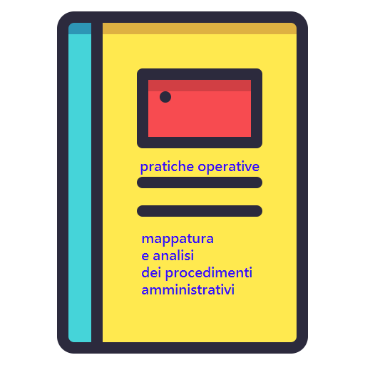

Mappatura dei procedimenti amministrativi per la digitalizzazione
Sito web: https://uo-transizionedigitalecomunepalermo.github.io/mappatura-procedimenti-amministrativi/
Repo: https://github.com/UO-TransizioneDigitaleComunePalermo/mappatura-procedimenti-amministrativi



Generazione del documento in PDF
Visualizza i contenuti della documentazione in formato PDF
Procedimenti amministrativi per la digitalizzazione↵

Cosa è questo progetto di documentazione ↵
Questo progetto di documentazione ha lo scopo di illustrare un metodo e un set di strumenti semplici per avviare la mappatura e analisi dei procedimenti amministrativi gestiti da una Pubblica Amministrazione locale, con particolare riferimento all’ente "Comune".
Realizzare un’analisi dei procedimenti in ottica di semplificazione, al fine di creare le pre-condizioni per la reingegnerizzazione degli stessi e la relativa digitalizzazione.
Questa guida è stata progettata seguendo il percorso operativo condotto dall’Amministrazione comunale di Palermo, impegnata da anni nella transizione alla modalità digitale, come prevista dal Codice dell’Amministrazione Digitale (decreto legislativo n. 82/2005 e successive modifiche).
Vengono descritte le azioni realizzate dal personale comunale, che hanno portato alla redazione di un catalogo contenente le fasi operative e i metadati, tracciando un passo importante per il Comune di Palermo, necessario alla corretta digitalizzazione dei procedimenti amministrativi.
Il processo di lavoro - svolto in ordine temporale - è raffigurato nel seguente schema:
graph TD
A([l'analisi dei procedimenti è stabilita come obiettivo nel Piano Performance!]) -->|direttive ai dirigenti| B([redazione schede dei 1- metadati e 2- delle fasi operative])
B -->|compilazione schede da parte dei responsabili procedimenti| C([creazione database procedimenti: mappatura])
C -->|check da parte di un ufficio centrale| D([check database procedimenti])
D -->|a cura di un ufficio centrale che colleziona le schede| E([creazione catalogo procedimenti])
E -->|a cura di un ufficio centrale per divulgazione ad uffici| F([condivisione online catalogo procedimenti])
style A fill:#fc5b5b,stroke:#333,stroke-width:2px Destinatari del progetto ↵
I destinatari dei contenuti del progetto sono amministratori, dirigenti e dipendenti degli enti comunali.
I comuni sono tra i maggiori erogatori di servizi pubblici sul territorio a livello locale, e per tale motivo gestiscono un numero elevato di procedimenti amministrativi correlati agli stessi servizi.
Questo progetto si pone l'obiettivo di facilitare e documentare il percorso operativo che il personale delle amministrazioni comunali deve avviare e condurre per la digitalizzazione dei servizi e dei relativi procedimenti.
Forum per l'interazione e la propositività ↵
Nella fase di creazione di questo documento abbiamo pensato che interagire e confrontarsi con altre persone (colleghe/i di altre Pubbliche Amministrazioni e non) sia una delle cose più importanti da fare se si vuole migliorare costanetemente il modo di lavorare negli uffici pubblici.
A tal proposito è stato predisposto un apposito Forum sulla piattaforma GitHub , che ospita il codice sorgente di questo progetto di documentazione, nel quale è possibile fare domande, ma anche proporre idee e miglioramenti al flusso di lavoro per la mappatura e analisi dei procedimenti amministrativi. Un luogo di interazione.
Focus giuridico ↵
Focus giuridico sul "procedimento amministrativo" ↵
In questa pagina si parte dalla "definizione giuridica" di procedimento amministrativo e si pone adeguata attenzione alla differenza tra i "procedimenti attivati d’ufficio" e i "procedimenti attivati da iniziativa di parte" di un cittadino/cliente.
Il Procedimento Amministrativo↵
👉 Definizione (Virga):
“Il procedimento consiste in una sequenza di atti aventi diversa natura e funzione, ma preordinati, nonostante la loro eterogeneità e la loro relativa autonomia, alla emanazione di un provvedimento centrale o conclusivo”.
Le Pubbliche Amministrazioni, dunque, agiscono per procedimenti e, di conseguenza, il procedimento di digitalizzazione non può limitarsi alla mera informatizzazione degli atti.
Fasi del Procedimento Amministrativo↵
Possiamo distinguere tre fasi fondamentali:
- a. fase preparatoria;
- Stadio di iniziativa
- Stadio di istruttoria
- b. fase dispositiva;
- c. fase integrativa dell'efficacia
- Controllo
- Comunicazione
Fase preparatoria↵
Lo stadio dell'iniziativa comprende tutti gli atti propulsivi con cui si mette in moto il procedimento. L'iniziativa può essere:
- d'ufficio: in tal caso può promanare o dallo stesso organo competente per l'emissione del provvedimento conclusivo (iniziativa autonoma ad es. irrogazione di una contravvenzione) o da un organo diverso che interviene mediante la richiesta o la proposta (iniziativa eteronoma ad es. richiesta di nulla osta alla Sovrintendenza);
- di parte: che si esercita, ad es., con uno dei seguenti tipi di atti:
- istanza: con cui si richiede l'emissione di un provvedimento (ad es. concessione edilizia);
- denuncia: con cui si rende noto all'autorità amministrativa un determinato fatto o una determinata situazione, allo scopo di suscitare l'esercizio dei suoi poteri (es. denuncia di danni subiti);
- S.C.I.A. è la dichiarazione che consente alle imprese di iniziare, modificare o cessare un’attività produttiva (artigianale, commerciale, industriale), al momento della presentazione senza dover più attendere i tempi e l’esecuzione di verifiche e controlli preliminari da parte delle amministrazioni competenti;
- ricorso: con cui si richiede un riesame di legittimità o di merito di atti ritenuti lesivi di diritti soggettivi o interessi legittimi (procedimento di secondo grado).
Lo stadio dell'istruttoria è inteso ad acquisire e valutare tutti i dati utili ai fini dell'emanazione dell'atto finale o conclusivo, che viene adottato nella successiva fase dispositiva.
Il Responsabile del procedimento assegna a sé o ad altro funzionario la responsabilità dell'istruttoria e provvede a dare comunicazione di tale assegnazione sia a colui che ha presentato l'atto di iniziativa, sia ai controinteressati
Ai fini dell'istruttoria debbono essere compiute le seguenti operazioni:
- accertamento dei requisiti e presupposti per l'ammissibilità dell'istanza;
- verifica dei dati rilevanti: es. esame dei documenti, ispezioni, indagini richiesta di notizie agli interessati;
- acquisizione dei pareri obbligatori e delle valutazioni tecniche. Possono essere richiesti pareri facoltativi, che non siano però palesemente finalizzati a prolungare artificiosamente l'istruttoria (divieto di aggravamento della procedura);
- richiesta di manifestazioni di volontà di altri organi o amministrazioni: allorché per il provvedimento finale si richiede il concorso di più organi della stessa amministrazione ovvero si richiedano atti di assenso (nulla osta, intese, autorizzazioni) di altre amministrazioni, spetta al responsabile dell'istruttoria acquisire tali atti;
- valutazione delle opposizioni presentate dagli interessati.
Fase Dispositiva↵
Ultimata l'istruttoria, entro il termine predeterminato per il singolo procedimento, l'amministrazione è tenuta ad adottare il provvedimento finale, sia esso positivo o negativo, poiché essa ha il dovere di concludere il procedimento "mediante l'adozione di un provvedimento espresso", salvi i casi di “silenzio assenso”.
Competente ad adottare il provvedimento finale è di regola il responsabile del procedimento.
La caratteristica essenziale del provvedimento finale è quella di porsi come punto di imputazione degli effetti della fattispecie. Le successive fasi di controllo e di comunicazione assolvono la funzione ausiliaria di integrare l'efficacia dell'atto già esistente e perfetto, munendolo di esecutività (con gli atti di controllo) o di obbligatorietà (per gli atti di comunicazione). Ciò è comprovato dal fatto che gli effetti giuridici del provvedimento conclusivo si riportano retroattivamente al momento della fase dispositiva in cui si è perfezionato l'atto, qualora l'atto di controllo sia intervenuto successivamente.
Fase integrativa dell’efficacia↵
- Fase di controllo: L'atto di controllo si pone come requisito di efficacia dell'atto finale, nel senso che esso non influisce sulla perfezione dell'atto, né sulla validità, ma esclusivamente sulla efficacia dell'atto o per consentirne la produzione degli effetti (controllo preventivo) ovvero per farli cessare (controllo successivo).
- Fase di Comunicazione: Gli atti di comunicazione servono, come quelli di controllo, a conferire efficacia al provvedimento già perfezionato. In particolare: per gli atti recettizi (ad es. la disdetta di un contratto di locazione) la comunicazione costituisce requisito di obbligatorietà, e si pone come condizione perché l'atto possa produrre i suoi effetti nella sfera del destinatario;
- per gli atti non recettizi la comunicazione serve solo a dare legale conoscenza, ai fini soprattutto di una eventuale impugnativa. In ogni caso la comunicazione è solo un requisito di efficacia dell'atto comunicato, rispetto al quale mantiene la sua autonomia.
La comunicazione a destinatari determinati avviene con la notificazione a mezzo di messo notificatore. Allorché si tratti di atti di carattere generale ovvero quando i destinatari non siano facilmente identificabili attraverso il testo del provvedimento, la comunicazione avviene mediante la pubblicazione, ad es. nella Gazzetta Ufficiale per gli atti dell'amministrazione centrale
Processo Amministrativo e Procedimento Amministrativo↵
Sono la stessa cosa?
Quando parliamo di PROCESSO AMMINISTRATIVO ci riferiamo ad una serie di atti, fasi lavorative, adempimenti, che non necessariamente comportano l’emanazione di un atto o di un provvedimento finale.
Un PROCEDIMENTO AMMINISTRATIVO, invece, come abbiamo visto, si conclude sempre con un provvedimento finale.
E’ importante quindi comprendere che dobbiamo digitalizzare tutta l’attività amministrativa mappando ed esaminando i singoli procedimenti e non partire dai processi, che possono abbracciare più procedimenti.
Cos’è un "endoprocedimento"?↵
È la parte di un procedimento amministrativo che ha come scopo la predisposizione di un provvedimento parziale necessario per il completamento dell’intero procedimento stesso.
Pensiamo, ad es., alla richiesta di un’autorizzazione a un’Amministrazione pubblica e che s’inoltri la richiesta ad un unico ufficio. Ciascuna delle unità coinvolte nel processo opererà autonomamente, per la parte che le compete, ma se alla fine tutti gli uffici interessati avranno espresso parere favorevole alla richiesta, la somma degli endoprocedimenti produrrà la necessaria autorizzazione.
Così come tutto ciò che un’Amministrazione fa per il pagamento di una fattura ad un fornitore, è un endoprocedimento del procedimento amministrativo “Acquisto di beni e servizi”
L’endoprocedimento non è altro che un procedimento parziale o, letteralmente, interno.
Legge 7 agosto 1990, n. 241 sul procedimento amministrativo↵
La legge n. 241/1990 ha colmato una lacuna del nostro ordinamento, dettando norme sul procedimento. Tale legge disciplina in particolare la fase dell'iniziativa e dell'istruttoria, allo scopo di fornire al privato adeguate garanzie nella fase di formazione dell'atto amministrativo.
La legge contiene anche norme che riguardano l'organizzazione e il funzionamento degli organi burocratici (es. Conferenza di Servizi). Alla legge sul procedimento è stato attribuito il carattere di legge di "grande riforma".
Articoli del "CAD" che hanno refluenze nel procedimento amministrativo↵
Di seguito vengono elencati gli articoli del Codice dell'Amministrazione Digitale (CAD) che hanno una relazione diretta o indiretta con l'attività di digitalizzazione dei procedimenti amministrativi e dei relativi servizi all'utenza.
Nota
Gli articoli vengono illustrati anche nelle diverse pagine di questo progetto di documentazione, inserite nel contesto degli argomenti trattati.
Articolo 12 del Codice Amministrazione Digitale (CAD): Norme generali per l'uso delle tecnologie dell'informazione e delle comunicazioni nell'azione amministrativa↵
Art. 12 del CAD prevede che:
1
Le pubbliche amministrazioni nell'organizzare autonomamente la propria attivita' utilizzano le tecnologie dell'informazione e della comunicazione per la realizzazione degli obiettivi di efficienza, efficacia, economicita', imparzialita', trasparenza, semplificazione e partecipazione nel rispetto dei principi di uguaglianza e di non discriminazione, nonche' per l'effettivo riconoscimento dei diritti dei cittadini e delle imprese di cui al presente Codice in conformita' agli obiettivi indicati nel Piano triennale per l'informatica nella pubblica amministrazione di cui all'articolo 14-bis, comma 2, lettera b).
↓
1- Le PA sono tenute ad usare le tecnologie ICT nell'organizzazione e gestione delle attività istituzionali. E lo fanno conformemente agli obiettivi operativi previsti dal Piano Triennale per l'Informatica nella PA
1-bis
Gli organi di Governo nell'esercizio delle funzioni di indirizzo politico ed in particolare nell'emanazione delle direttive generali per l'attività amministrativa e per la gestione ai sensi del comma 1 dell’articolo 14 del decreto legislativo 30 marzo 2001, n. 165, e le amministrazioni pubbliche nella redazione del piano di performance di cui all'articolo 10 del decreto legislativo 27 ottobre 2009, n. 150, dettano disposizioni per l'attuazione delle disposizioni del presente Codice.
↓
1-bis- Le PA in fase di redazione dei Piani per la Performance inseriscono obiettivi dirigenziali per l'attuazione del CAD, cioè di transizione digitale
1-ter
I dirigenti rispondono dell’osservanza ed attuazione delle disposizioni di cui al presente Codice ai sensi e nei limiti degli articoli 21 e 55 del decreto legislativo 30 marzo 2001, n. 165, ferme restando le eventuali responsabilità penali, civili e contabili previste dalle norme vigenti. L’attuazione delle disposizioni del presente Codice è comunque rilevante ai fini della misurazione e valutazione della performance organizzativa ed individuale dei dirigenti.
↓
1-ter- L'attuazione dei contenuti del CAD, previsti nei Piani della Performance, è in diretta relazione alla misurazione e valutazione della performance organizzativa e indiduale dei dirigenti. I premi di produttività dei dirigenti risentono del livello di raggiungimento degli obiettivi di transizione digitale, ognuno secondo le competenze rivestite in seno alla PA presso la quale presta servizio.
Articolo 15 del Codice Amministrazione Digitale (CAD): “razionalizzare e semplificare”↵
L'Art. 15 del CAD, comma 2 prevede che:
... le pubbliche amministrazioni provvedono in particolare a razionalizzare e semplificare i procedimenti amministrativi, le attività gestionali, i documenti, la modulistica, le modalità di accesso e di presentazione delle istanze da parte dei cittadini e delle imprese, assicurando che l'utilizzo delle tecnologie dell’informazione e della comunicazione avvenga in conformità alle prescrizioni tecnologiche definite nelle regole tecniche di cui all’articolo 71.
↓
Viene introdotto nel CAD il principio di "razionalizzare" e "semplificare" i procedimenti amministrativi:
- da un adempimento → (previsto dal CAD)
- si passa ad un'opportunità → (nuovo modo di lavorare dentro la PA e conseguentemente nuovo modo di far fruire i servizi pubblici ai cittadini attraverso l'uso delle tecnologie della comunicazione e dell'informazione)
Articolo 40 del Codice Amministrazione Digitale (CAD): Formazione di documenti informatici↵
Art. 40 del CAD prevede che:
Le pubbliche amministrazioni formano gli originali dei propri documenti, inclusi quelli inerenti ad albi, elenchi e pubblici registri, con mezzi informatici secondo le disposizioni di cui al presente codice e le ((Linee guida))
↓
Le PA utilizzano le tecnologie della comunicazione e dell'informazione per formare e gestire la documentazione amministrativa. La carta cessa di essere utilizzata. Le apposite linee guida dettano le regole per la gestione documentale in modalità digitale.
Articolo 41 del Codice Amministrazione Digitale (CAD): Procedimento e fascicolo informatico↵
Art. 41 del CAD prevede che:
1
Le pubbliche amministrazioni gestiscono i procedimenti amministrativi utilizzando le tecnologie dell'informazione e della comunicazione. Per ciascun procedimento amministrativo di loro competenza, esse forniscono gli opportuni servizi di interoperabilita' ((o integrazione)), ai sensi di quanto previsto ((dagli articoli 12 e 64-bis)).
↓
Le PA gestiscono i procedimenti amministrativi in mdoalità digitale. E assicurano serivizi di interoperabilità con altre banche dati anche di altre PA.
Articolo 69 del Codice Amministrazione Digitale (CAD): Riuso delle soluzioni e standard aperti↵
Art.69 del CAD prevede che:
le PA che siano titolari di soluzioni e programmi informatici realizzati su specifiche indicazioni del committente pubblico, hanno l’obbligo di rendere disponibile il relativo codice sorgente, completo della documentazione e rilasciato in repertorio pubblico sotto licenza aperta, in uso gratuito ad altre pubbliche amministrazioni o ai soggetti giuridici che intendano adattarli alle proprie esigenze, salvo motivate ragioni di ordine e sicurezza pubblica, difesa nazionale e consultazioni elettorali
↓
Le PA, al fine di gestire procedimenti amministrativi e documenti in modalità esclusivamente digitali, necessitano di applicativi informatici. L'attività di reperimento degli applicativi informatici prevede che prima di rivolgersi al libero mercato le PA provvedano a consultare il catalogo AGID del riuso, per verificare se esistono soluzioni precedentemente adottate da altre PA, così da potere essere riutilizzate gratuitamente.
Solo dopo aver verificato che tali soluzioni non sono presenti nel catalogo AGID del riuso, e producendo apposita relazione attenstante l'assenza di quanto ricercato nel catalogo, le PA possono rivolgersi al libero mercato.
Le PA che acquisiscono, o che hanno acquisito nel passato programmi informatici gestionali, hanno l'obbligo di di rendere disponibile: 1. il codice sorgente del programma; 2. la necessaria documentazione esplicativa per l'installazione del programma; 3. una licenza aperta che ne consenta il riuso gratuito da parte di altre PA.
Ended: Focus giuridico
Mappatura ↵
Percorsi di digitalizzazione in ambito comunale↵
In questa pagina viene illustrato in sintesi il percorso di digitalizzazione documentale del Comune di Palermo, coerentemente con le indicazioni dell CAD.
Art.15 del CAD: “razionalizzare e semplificare”↵
L'Articolo 15 del CAD, comma 2 prevede che
... le pubbliche amministrazioni provvedono in particolare a razionalizzare e semplificare i procedimenti amministrativi, le attività gestionali, i documenti, la modulistica, le modalità di accesso e di presentazione delle istanze da parte dei cittadini e delle imprese, assicurando che l’utilizzo delle tecnologie dell’informazione e della comunicazione avvenga in conformità alle prescrizioni tecnologiche definite nelle regole tecniche di cui all’articolo 71.
Razionalizzare e semplificare:
- da un adempimento → (Codice Amministrazione Digitale)
- ad un'opportunità → (nuovo modo di lavorare dentro la PA e di far fruire i servizi pubblici ai cittadini)
Cronistoria delle attività del Comune di Palermo relative a digitalizzazione documentale↵
Il Comune di Palermo è impegnato da anni nella transizione al digitale, come previsto dal CAD (d.lgs. n. 82/2005 e succ. modifiche/integrazioni).
I passi compiuti dall'Amministrazione comunale di Palermo per la digitalizzazione dei documenti sono stati:
- nel 2017 la digitalizzazione di tutti i documenti dell'Amministrazione destinati a soggetti privati/pubblici esterni (note),
- nel 2019 la digitalizzazione delle Determinazioni Dirigenziali,
- nel 2021 la digitalizzazione delle Deliberazioni di Giunta comunale.
La sfida più grande in corso è quella relativa alla digitalizzazione dei procedimenti amministrativi gestiti dal personale degli uffici. Dal 2020, a seguito di disposizioni del Segretario Generale, tutte le UO degli uffici, coordinate dai Dirigenti, hanno effettuato l’analisi dei procedimenti necessaria per:
- catalogarli tutti in un elenco ben definito,
- definire le fasi operative per ogni procedimento con ordine temporale delle azioni da compiere,
- definire una classe esaustiva di metadati per i procedimenti.
Ciò al fine di individuare applicativi informatici in grado di soddisfare pienamente ogni singola necessità di gestione dei procedimenti gestiti nei vari Uffici dell'Amministrazione.
Dematerializzazione↵
Il Codice dell’Amministrazione Digitale (CAD) prevede la dematerializzazione dei processi amministrativi degli enti pubblici. I processi amministrativi sono caratterizzati dalla presenza di documenti amministrativi che hanno una nascita, cioè la formazione del documento, e hanno una fine, quale ad es.:
- pubblicazione online (amministrazione trasparente, albo pretorio, open data);
- invio ad altri enti o al cittadino (certificato, attestazione, autorizzazione, nulla osta, determinazione, deliberazione,...) via email/PEC o applicativo informatico.
La dematerializzazione è l’attività di produzione, gestione e conservazione dei documenti informatici, che viene svolta attraverso l’uso di applicativi informatici. I documenti amministrativi sono, a sua volta, correlati ai procedimenti amministrativi (attivati d'ufficio o su istanza di parte).
I documenti informatici:
- nascono digitali,
- sono parte integrante dei procedimenti amministrativi specifici dell’ente, gestiti con un applicativo informatico specifico,
- sono collegati al registro di protocollo informatico dell’ente.

Nella dematerializzazione si opera esclusivamente con il data entry, cioè la compilazione di testo in campi di un applicativo (software) e flag di campi in un menù precostruito. I dati inseriti nel software finiscono in un database strutturato, dal quale si possono fare sia estrazioni specifiche (ricerche) per parole chiave, che generare report periodici. Dal database possono essere generati automaticamente documenti amministrativi informatici da inviare al cittadino che ha effettuato richieste (richieste di servizi - accesso agli atti - ecc.). I documenti amministrativi informatici così generati possono essere firmati digitalmente dal dirigente/funzinario responsabile, nella stessa piattaforma informatica, prima di essere inviati al cittadino.
Documento informatico e Protocollo informatico↵

Nella digitalizzazione di un ente pubblico assume una rilevante importanza il documento informatico in relazione al protocollo informatico.
Il documento informatico è: la memorizzazione su supporto informatico in formato digitale nativo delle informazioni derivanti da processi informatici dell’ente, o dalla presentazione telematica di dati attraverso moduli resi disponibili online all’utente, da compilare sulla pagina web.
Il protocollo informatico è: un applicativo nel quale vengono tracciati e metadatati i documenti (in formato digitale) che l’ente produce. Il protocollo deve essere integrato informaticamente con gli applicativi gestionali dell’ente nei quali si creano, si firmano digitalmente e si conservano i documenti informatici.
Smaterializzazione↵

La smaterializzazione è l'attività che si effettua per riportare un documento esistente in forma cartaceo ad un formato digitale (es. formato PDF), così da inserirlo nel “fascicolo” digitale del procedimento amministrativo specifico. In questo caso il fascicolo sarà composto da:
👉 documenti amministrativi nativi digitali + 👉 documenti informatici frutto di scansione
Nella smaterializzazione si opera con la scansione, cioè l’acquisizione dell’immagine del documento cartaceo. Il documento scansionato è una vera e propria “fotografia” del documento cartaceo. Non è possibile estrapolare "informaticamente" dati e informazioni da un documento scansionato (a meno che non si utilizzano efficaci programmi di OCR in grado di leggere testo e riportarlo in un formato di testo di tipo "aperto").
Per anni si sono scansionati atti cartacei nella PA. Oggi la scansione è un attività da eseguire solo per riportare in formato digitale atti cartacei necessari da integrare in fascicoli in cui la produzione amministrativa è già nativa digitale (es. atti di decine di anni fa relativi a servizi di edilizia privata quali permessi di costruire, certificati di abitabilità/agibilità, ecc.).
Era il 12 Agosto 2016 ...↵
Il 12 agosto 2016 doveva essere la data dello witch-off definitivo della produzione dei documenti cartacei da parte della PA. Questa data, infatti, era stata prevista nel DPCM 13 novembre 2014 quale scadenza ultima entro la quale le Pubbliche Amministrazioni avrebbero dovuto adeguare, così come recita l’articolo 17 della norma, i propri sistemi di gestione informatica dei documenti.
Si trascurava il fatto che, naturalmente, i documenti cartacei avrebbero potuto ancora essere consegnati dai cittadini per le loro istanze, comunicazioni ecc., in quanto l’obbligo riguardava soltanto i documenti scritti da una PA.
Meglio parlare allora di un sistema “misto” di documenti prodotti e ricevuti perché il cittadino sprovvisto, ad esempio, di posta elettronica per ricevere comunicazioni dalla PA, avrebbe comunque ricevuto a casa un documento cartaceo, sebbene l’originale fosse stato digitale fin dall’origine.
La data del 12 agosto 2016 fu sospesa dal d.lgs. 179/2016, che disponeva l’aggiornamento delle "regole tecniche" entro quattro mesi dall’entrata in vigore dello stesso decreto.
L'art. 40 del CAD (Formazione di documenti informatici) prevede che
Le pubbliche amministrazioni formano gli originali dei propri documenti, inclusi quelli inerenti ad albi, elenchi e pubblici registri, con mezzi informatici secondo le disposizioni di cui al presente codice e le ((Linee guida))
Cosa decide di fare il Comune di Palermo?↵
Palermo, facendo tesoro di quanto contenuto nell’art. 61 del D. lgs. 179/2016 che prevedeva che le regole tecniche vigenti nelle materie del Codice dell’amministrazione digitale restassero efficaci fino all’adozione del nuovo decreto, ha deciso di iniziare un graduale passaggio al digitale, e di rendere nativi digitali tutti quegli atti che abbiano come destinatario un soggetto esterno all’Amministrazione.
Sarebbe stato più corretto partire dalla digitalizzazione dei vari processi interni all’Amministrazione, ma stante la difficoltà e i tempi necessari per un’analisi del genere, si è deciso di partire dal basso con la digitalizzazione e sottoscrizione digitale dei documenti informatici di rilevanza esterna secondo quanto previsto dall’art. 34 del CAD.
A febbraio del 2017 nasce la Procedura informatica "Protocollo-Libro Firma Digitale" per la firma di note con rilevanza esterna. La procedura si compone di 3 fasi:
- Prima Fase: è la fase della Richiesta Avanzata. Il soggetto Responsabile della U.O., o il responsabile del procedimento nel caso di UU.OO. complesse, od un loro incaricato, provvede a caricare nella procedura il documento da veicolare in formato PDF.
- Seconda Fase: è la fase della Predisposizione alla Firma. Il soggetto che ha effettuato la richiesta avanzata, riceverà una e-mail che lo informerà del corretto caricamento dell’atto. A questo punto si collegherà all’applicativo Libro Firma e stabilirà le “policy di firma” sottoponendo il documento al Dirigente (o ai Dirigenti) responsabili.
- Terza Fase: è la fase della Firma Digitale. Il Dirigente responsabile (o i Dirigenti nel caso di documento sottoposto a firma doppia) provvede a firmare digitalmente il documento collegandosi all’applicativo Libro Firma, ed in automatico il documento stesso verrà numerato al protocollo informatico ed archiviato digitalmente nello stesso. Una e-mail automatica informerà il richiedente (colui che nella prima fase ha caricato il documento sulla piattaforma) dell’avvenuto completamento della procedura e del numero e data di protocollo rilasciato.
La Procedura informatica "Protocollo-Libro Firma Digitale" serve a:
- metadatare adeguatamente il documento amministrativo nel protocollo informatico,
- firmare digitalmente il documento amministrativo,
- assegnare un numero e una data di protocollo al documento amministrativo,
- conservare digitalmente a norma il documento amministrativo.
E' stata effetuata una capillare attività di sensibilizzazione e formazione sulla procedura "Protocollo-Libro Firma Digitale". Dal 1 febbraio 2017 al 31 Dicembre 2020 viene effettuata la formazione sul digitale e l’addestramento all’utilizzo della procedura che si conclude con i seguenti numeri:
- n. 1.575 dipendenti formati ed abilitati
- n. 17 Libri Firma NON Dirigenziali relativi a Consiglio Comunale, Giunta, Commissioni Consiliari (7), Consigli di Circoscrizione(8)
- n. 107 Libri Firma Dirigenziali complessivamente realizzati anche a seguito delle due riorganizzazioni dell’Amministrazione.
Cambia il modo di lavorare al Comune di Palermo: la carta comincia a scomparire dagli uffici.

Dal 2 Gennaio 2019 tutte le Determinazioni Dirigenziali del Comune di Palermo diventano digitali
Il Segretario Generale in una riunione dei primi di Novembre 2018, insieme all’allora Dirigente del Servizio Innovazione, impone a tutti gli Uffici l’utilizzo della nuova piattaforma per la gestione delle Determinazioni dirigenziali. Viene abilitato “di default” tutto il personale di Categoria D, in qualità di responsabile endoprocedimentale, al caricamento in piattaforma dei dati di una determinazione. Vengono organizzate n. 13 sessioni massive di formazione per l’addestramento all’uso del software del personale e dei Dirigenti interessati.
Estrema cura viene riposta nella metadatazione della Determinazione. Un flusso grafico evidenzia lo stato di gestione della Determinazione nell'applicativo informatico.
Dal 1 Maggio 2021 anche le Deliberazioni di Giunta Municipale seguono la stessa vita delle Determinazioni Dirigenziali e diventano digitali.
Reingegnerizzazione prima della digitalizzazione↵
La reingegnerizzazione è un attività di negoziazione tra:
- esigenze e prassi operative consolidate nel tempo negli uffici;
- necessità di evitare sprechi e ridondanze nella gestione dei procedimenti;
con l’obiettivo di velocizzare e ottimizzare la gestione dei procedimenti.
La reingegnerizzazione va attuata dopo alcuni step:
- analisi dettagliata dei procedimenti condotta negli uffici responsabili dei procedimenti (es. usare un formato tabellare può aiutare);
- mappatura dei singoli procedimenti individuati. Definire un catalogo finale (elenco) dei procedimenti consultabile online anche dai cittadini così da fornire informazioni dettagliate (es. sui servizi di interesse della collettività - obbligo d.lgs. 33/2013);
- valutazione congiunta delle attività che generano “sprechi” di lavoro.
Il 3° step rappresenta il tempo in cui può essere effettuata la “reingegnerizzazione” tenendo conto delle modifiche da apportare ai procedimenti per un ottimale gestione del procedimento stesso nella modalità digitale.
Per approfondimenti sull'argomento
Vai alla pagina dedicata Reingegnerizzazione
Il supporto dell’Intelligenza Artificiale↵
L'Intelligenza Artificiale (grazie all'utilizzo di specifici algoritmi) può fornire un enorme supporto nella gestione quotidiana di procedimenti e servizi.
Dall'analisi e interpretazione “semantica” del testo dei documenti generati dai procedimenti amministrativi (norme, termini specifici ripetuti) può nascere un sistema utile al personale dell’Ente per la ricerca multicriterio in un documento o in un archivio documentale.
Si può disporre di un auto controllo della gestione del procedimento e ricevere avvisi di scadenze.
Può essere fornito all'utente dei servizi (cittadino) un servizio di ricerca multicriterio e di assistenza virtuale che aiuta nella richiesta di servizi pubblici.
Può essere fornito un supporto al backend (lato personale della PA) che trova una facilitazione nella gestione del processo (documenti - dati) che interessa i vari procedimenti amministrativi negli uffici pubblici.
Nella digitalizzazione bisogna pensare per dati e non per PDF↵
Oggi spesso pensiamo la documentazione della PA come formati PDF che derivano da formati DOCX / ODT ai quali abbiamo lavorato precedentemente.
Dimentichiamo di lavorare principalmente per documenti PDF.
Dobbiamo lavorare per compilazione di campi in un applicativo, come quando compriamo un biglietto aereo online o usiamo piattaforme per acquisti online.
La compilazione (editing) di campi in un applicativo genera automaticamente diversi formati: XML - JSON - ODT e solo alla fine il formato PDF per la finalità di "essere firmato digitalmente" da un responsabile.
Dobbiamo pensare al formato PDF come un formato da generare nell'applicativo informatico - a livello temporale - solo alla fine della gestione di un procedimento.
Quando si realizzano servizi online nella PA si pensa a↵
- Digital first, tutto nella PA nasce in formato digitale.
- Once only, la PA chiede un dato una sola volta al cittadino e se una PA ha bisogno di informazioni che detiene un altra PA, non usa il cittadino come garzone per il trasferimento del documento, ma i dati vengono scambiati tramite interoperabilità degli applicativi informatici.
- Cloud first, i servizi delle PA sono gestiti nativamente su servizi cloud.
- Interoperabile by design, le PA, nella realizzazione di piattaforme applicative, pensano all’interoperabilità dei software e delle banche dati, per lo scambio dati tra lo stesso ente o tra enti diversi.
Questi sono i requisiti indispensabili da indicare nei capitolati di appalto per la fornitura di applicativi informatici destinati a gestire procedimenti amministrativi e servizi pubblici online.
I 5 livelli di interazione dei servizi online↵
A tutti i servizi online sono correlati distinti e specifici procedimenti amministrativi. Il cittadino interagisce con la pubblica amministrazione nella fase di:
- richiesta del servizio,
- attesa dellerogazione del servizio rischieto,
- ricezione del servizio richiesto.
La PA deve tendere al raggiungimento del 5° livello dei servizi online, al fine di consentire al cittadino di essere informato - in tenpo reale - sull'intero ciclo di vita del procedimento che permetterà l'erogazione del servizio.
| livello 1 | livello 2 | livello 3 | livello 4 | livello 5 |
|---|---|---|---|---|
| Informazione | Interazione a una via | Interazione a due vie | Transazione | Personalizzazione |
| Sono fornite all’utente informazioni sul procedimento amministrativo (es. finalità, termini di richiesta, ecc.) e sulle modalità di espletamento (es. sedi, orari di sportello, indirizzi email da utilizzare, ….) | Oltre alle informazioni, sono resi disponibili all’utente i moduli per la richiesta dell’atto (avvio procedimento amministrativo) di interesse che dovrà poi essere inoltrata attraverso canali tradizionali (es. modulo di variazione residenza, moduli di autocertificazione). Moduli da scaricare in formato pdf/xlsx/odt/docx | L’utente può avviare il procedimento amministrativo di interesse (es. il modulo può essere compilato e inviato online) e viene garantita online solo la presa in carico dei dati immessi dall’utente e non la loro contestuale elaborazione | L’utente può avviare il procedimento amministrativo di interesse fornendo i dati necessari ed eseguire la transazione corrispondente interamente online, incluso l'eventuale pagamento dei costi previsti | L'utente, oltre ad eseguire online l'intero ciclo del procedimento amministrativo di interesse riceve informazioni (sono ricordate le scadenze, è restituito l’esito del procedimento, ecc.), che gli sono inviate preventivamente, sulla base del profilo collegato ai sistemi informatici dell’ente (sistema di notifiche e allerta) |
La PA alla ricerca del software↵
L’art. 69 del CAD prevede che
le PA che siano titolari di soluzioni e programmi informatici realizzati su specifiche indicazioni del committente pubblico, hanno l’obbligo di rendere disponibile il relativo codice sorgente, completo della documentazione e rilasciato in repertorio pubblico sotto licenza aperta, in uso gratuito ad altre pubbliche amministrazioni o ai soggetti giuridici che intendano adattarli alle proprie esigenze, salvo motivate ragioni di ordine e sicurezza pubblica, difesa nazionale e consultazioni elettorali.
A tal fine l’AGID ha reso disponibile online un catalogo del riuso gratuito del software https://developers.italia.it/it/software, dove ogni PA deve verificare la presenza di programmi che soddisfano le proprie esigenze, e questa attività deve avvenire necessariamente prima di rivolgersi al mercato privato. I codici sorgenti del software presenti nel catalogo del riuso sono accompagnati da riferimenti (PA, nome, cognome, telefono, email,..) della PA erogatrice del software e della documentazione tecnica necessaria all'instalalzione dei programmi.
CAD Art. 68. Analisi comparativa delle soluzioni
Coerentemente con l'art. 68 del CAD, le pubbliche amministrazioni acquisiscono programmi informatici o parti di essi nel rispetto dei principi di economicità e di efficienza, tutela degli investimenti, riuso e neutralità tecnologica, a seguito di una valutazione comparativa di tipo tecnico ed economico tra le seguenti soluzioni disponibili sul mercato:
- a) software sviluppato per conto della pubblica amministrazione;
- b) riutilizzo di software o parti di esso sviluppati per conto della pubblica amministrazione;
- c) software libero o a codice sorgente aperto;
- d) software fruibile in modalità cloud computing;
- e) software di tipo proprietario mediante ricorso a licenza d’uso;
- f) software combinazione delle precedenti soluzioni.
A tal fine, le pubbliche amministrazioni prima di procedere all’acquisto, secondo le procedure di cui al codice di cui al decreto legislativo n. 50 del 2016, effettuano una valutazione comparativa delle diverse soluzioni disponibili sulla base dei seguenti criteri:
- a) costo complessivo del programma o soluzione quale costo di acquisto, di implementazione, di mantenimento e supporto;
- b) livello di utilizzo di formati di dati e di interfacce di tipo aperto nonché di standard in grado di assicurare l’interoperabilità e la cooperazione applicativa tra i diversi sistemi informatici della pubblica amministrazione;
- c) garanzie del fornitore in materia di livelli di sicurezza, conformità alla normativa in materia di protezione dei dati personali, livelli di servizio tenuto conto della tipologia di software acquisito.
Al fine di facilitare il processo decisionale per l'individuazione del software, venongo in aiuto le Linee guida su acquisizione e riuso di software per le pubbliche amministrazioni. Le Linee guida prevedono che il processo decisionale per l'individuazione del software passa attraverso la descrizione di Fasi e la loro organizzazione in Macro fasi.
Fase 1, 2 e 3

Fase 1 ↓

Fase 2 ↓

Fase 3 ↓

E' disponibile un Tool per la Valutazione Comparativa nell'Acquisizione e Riuso di Software reso da AGID.
Le PA che hanno acquisito software sono tenute a rilasciare codici sorgenti e relativa documentazione, accompagnati da una licenza aperta, sulla piattaforma https://developers.italia.it/it/software.
Al fine di facilitare il percorso per il riuso del software delle PA, il FormezPA ha realizzato un percorso formativo ad hoc per il personale della PA. I materiali didattici (video e dispense in formato PDF) sono di elevato valore per consentire e agevolare il riuso applicativo.
Esperienza e strumenti in un caso reale di analisi dei procedimenti amministrativi↵
In questa pagina viene illustrato il percorso realizzato dal Comune di Palermo per l’analisi dei procedimenti amministrativi in conformità al Codice dell'Amministrazione Digitale (riferimento articoli 41 e 12).
- Le pubbliche amministrazioni gestiscono i procedimenti amministrativi utilizzando le tecnologie dell'informazione e della comunicazione. Per ciascun procedimento amministrativo di loro competenza, esse forniscono gli opportuni servizi di interoperabilita' ((o integrazione)), ai sensi di quanto previsto ((dagli articoli 12 e 64-bis))
- Le pubbliche amministrazioni nell'organizzare autonomamente la propria attivita' utilizzano le tecnologie dell'informazione e della comunicazione per la realizzazione degli obiettivi di efficienza, efficacia, economicita', imparzialita', trasparenza, semplificazione e partecipazione nel rispetto dei principi di uguaglianza e di non discriminazione, nonche' per l'effettivo riconoscimento dei diritti dei cittadini e delle imprese di cui al presente Codice in conformita' agli obiettivi indicati nel Piano triennale per l'informatica nella pubblica amministrazione di cui all'articolo 14-bis, comma 2, lettera b).
Tutto inizia nel novembre 2020 con una direttiva del Segretario Generale che ha la finalità di effetuare l'analisi di ogni procedimento, ufficio per ufficio, coinvolgendo responsabili di procedimento e dirigenti.
Vengono costruite (dal Servizio Innovazione del Settore Servizi Diezione Generale) delle schede tabellari per la mappatura e analisi dei procedimenti e distribuite al personale per la compilazione.
Il percorso di compilazione viene monitorato da un Ufficio centrale (il Servizio Innovazione) con una semplice metodologia di seguito illustrata.
Il Piano della Performance e gli obiettivi funzionali alla transizione digitale dell'ente↵

Con nota n. 1319949 del 18.11.2020 del Segretario Generale (Integrazione Piano della Performance e Obiettivi Dirigenziali anno 2020) vengono assegnati ai Dirigenti gli obiettivi di redigere le schede per la descrizione e analisi dei procedimenti amministrativi di competenza, da completare entro il 31 dicembre 2021.
Redazione dell’analisi dei processi amministrativi relativi ai procedimenti ascritti alla competenza dei Servizi dirigenziali finalizzati al lavoro di digitalizzazione degli stessi processi
Trasmissione al Servizio Innovazione entro il 31/12/2020 di Foglio di Lavoro formato Excel riportante la descrizione delle fasi di processo di lavoro gestito relativo al procedimento amministrativo ascritto al servizio
L’analisi dei procedimenti amministrativi è necessaria per la corretta digitalizzazione degli stessi↵
A seguito della nota n. 1319949 del 18.11.2020 del Segretario Generale, il Servizio Innovazione predispone una scheda in formato tabellare per facilitare la compilazione delle informazioni sull’analisi dei procedimenti. La scheda viene condivisa via email a tutti i dirigenti. Il Servizio Innovazione presta supporto ai colleghi degli uffici per la compilazione delle schede.
La scheda è composta da 2 fogli in formato tabellare:
- uno per la descrizione dei metadati
- e uno per la descrizione delle fasi operative del procedimento amministrativo.
Richiesta ai dirigenti di compilazione delle schede↵
Viene chiesto ai Dirigenti di impartire direttive alle UU.OO. del proprio Servizio/Settore per avviare tempestivamente la compilazione delle schede e il relativo caricamento nella cartella di Google Drive dell'Area di appartenenza. Prima del caricamento delle schede sulla cartella di Google Drive da parte dei referenti delle UU.OO. responsabili di procedimenti amministrativi, si chiede ai Dirigenti di verificare l'esattezza e completezza delle informazioni riportate nelle stesse schede.
L'esattezza e completezza delle informazioni è necessaria, in un secondo momento, per costruire le funzioni operative di una piattaforma informatica di gestione documentale trasversale a tutti gli uffici, in grado di soddisfare le esigenze delle varie UU.OO. nella gestione dei procedimenti amministrativi di competenza.
Descrivere le fasi operative anche per endo-procedimenti↵
E' buona prassi descrivere le fasi del procedimento per macro fasi, riducendo il numero delle fasi nei casi di procedimenti complessi e di inserire nel campo "note aggiuntive" eventuali dettagli utili a comprendere le complessità delle stesse macro fasi descritte relative al procedimento amministrativo.
Gli endo-procedimenti possono essere così tracciati nel campo "note aggiuntive".
Per la compilazione della scheda sulle "fasi operative "dei procedimenti vedi la relativa pagina.
Comunicare la compilazione delle schede↵
Ultimata la compilazione della scheda il referente dell'UO informa via email il proprio dirigente e il referente dell'Area/Settore dell'avvenuta compilazione e del relativo inserimento (caricamento) nella cartella Drive dell'Area/Settore di appartenenza.
Un ufficio centrale controlla il contenuto delle schede↵
Il Servizio Innovazione (uficio centrale che effettua il monitoraggio) provvede a verificare il contenuto delle schede compilate e inserite nella cartella Drive dell'Area/Settore, e nel caso risultino mancanti informazioni importanti contatta il referente del procedimento amministrativo (email - tel) indicato nella stessa scheda.
Ultimata l’attività di controllo e censimento delle schede, il Servizio Innovazione provvede a costruire un file tabellare contenente l'elenco dei procedimenti dell’ente da condividere con il personale comunale e da rendere disponibile per la pubblica consultazione, così da facilitare i cittadini nella comprensione dei servizi di interesse.
L'elenco è costruito attraverso l'utilizzo di un file excel (su Google Drive) e lo "schema dati" è il seguente:
| area | settore | servizio | denominaz. procedimento | lavoro agile | email resp procedim. | telefono info | link scheda | rif |
|---|---|---|---|---|---|---|---|---|
Il campo link scheda contiene i link (URL) ai file tabellari contenente sia i metadati che gli step operativi dei vari procedimenti amministrativi, file che si trovano tutti dentro una cartella di Google Drive.

L'elenco dei procedimenti redatto servirà per costruire un interfaccia di catalogo di facile consultazione, anche online, illustrata nella pagina Catalogo dei procedimenti amministrativi.
Metodologia per monitorare la compilazione delle schede sui procedimenti↵

Considerato l'alto numero di procedimenti e l'articolata organizzazione dell'Amministrazione comunale di Palermo, viene costruita su Google spreadsheet (fogli su Google Drive) una scheda per il monitoraggio delle attività in corso.
Una funzione sui fogli tabellari Google spreadsheet consente di fissare risultati attesi e ogni volta che si raggiunge un risultato, flaggando la casella accanto quella con il risultato atteso è possibile visualizzare un andamento del lavoro per %, comodo per il monitoraggio.
Nel file https://docs.google.com/spreadsheets/d/1rEKcFH5NGqXr9KIHNHa6voSWBXnsljz4kOsmz91VDPE sono riportate le formule da inserire dentro due celle, in particolare per generare gli effetti dell’andamento progressivo del lavoro
=SPARKLINE(COUNTIF(A5:A,TRUE),{"charttype","bar";"max",COUNTA(B5:B);"color1","red"})
=COUNTIF(A5:A,TRUE)/COUNTA(B5:B)
Focus dell'AGID sul "SGPA" - Sistema di Gestione dei Procedimenti Amministrativi↵
L'AGID sottolinea che la gestione documentale dei procedimenti amministrativi garantisce la corretta amministrazione dei documenti dalla produzione alla conservazione.
Il Sistema di gestione dei procedimenti amministrativi nazionali è realizzato attraverso la definizione, a carico di AgID, delle regole di interoperabilità dei flussi documentali che le Pubbliche amministrazioni implementano per aderire al sistema.
Le amministrazioni implementano le API (application programming interface) per la partecipazione al Sistema di gestione dei procedimenti amministrativi..
Al riguardo è possibile consultare i Requisiti funzionali, non funzionali e di progetto del Sistema di gestione dei procedimenti amministrativi.
Il SGPA è
un sistema informatico la cui architettura è basata su componenti software aggregati per servizi organizzati su tre macro livelli funzionali, Front End, BackEnd e Datalayer, con compiti e responsabilità chiare e distinte, progettati nel rispetto dei migliori standard dell’ingegneria del software.
Ended: Mappatura
Metadati ↵
Mappatura di procedimento amministrativo attraverso i metadati ↵
Per la mappatura di un procedimento amministrativo è necessario costruire una scheda di metadati associati al procedimento stesso. La metadatazione del procedimento serve per costruire l'architettura degli applicativi informatici che gestiranno in modalità interamente digitale il procedimento stesso.
Al fine di costruire la scheda di metadati del procedimento è importante approfondire il significato e la funzione dei metadati.
Definizioni di metadati↵
-
norma ISO 23081-1 sistema di metadati per la gestione di documenti informatici**: Informazioni strutturate o semi-strutturate che consentono la formazione, registrazione, classificazione, accesso, conservazione e selezione di documenti nel tempo e nell’ambito di diversi domini.
-
norma ISO 15489: Dati che descrivono:
- il contenuto,
- la struttura,
- il contesto dei documenti,
- e la loro gestione nel tempo.
-
Wikipedia: Un metadato - dal greco μετὰ "oltre, dopo, per mezzo" e dal latino datum "informazione" - plurale: data - letteralmente "(dato) per mezzo di un (altro) dato", è un'informazione che descrive un insieme di dati.
-
Accademia Crusca: Distinzione tra
- metadati di struttura, definiscono l’architettura dei dati e la loro interrelazione,
- metadati di contenuto, classificano e descrivono l’informazione
i metadati sono dei marcatori, una sorta di post-it, collegati a un oggetto informatico (immagine, documento, pagina web, brano musicale ecc.), o a una serie di oggetti informatici, e hanno lo scopo di descriverne il contenuto e/o gli attributi.
Funzioni dei metadati nella "gestione documentale"↵
- Descrizione delle risorse/documenti;
- Recupero e accesso alle informazioni contenuti all’interno dei documenti;
- Gestione delle informazioni legate ai documenti (data creazione, oggetto, ….);
- Gestione delle informazioni relative alla provenienza del documento (autore, responsabile procedimento, ufficio generatore, mittente del documento, vari destinatari ..);
- Interoperabilità dei documenti (più documenti amministrativi possono essere messi in relazione tra loro per informazioni che hanno in comune, ad esempio atti amministrativi diversi che contengono all’interno la parola “pubblica illuminazione”);
- Conservazione dei documenti.
Funzione "conservativa" dei metadati in ambiente digitale↵
Dematerializzazione delle fonti dei documenti prodotti e mantenute informaticamente.
Vantaggi:
- facile accessibilità ai documenti, e ricercabilità;
- rapido e facile trasferimento su altri supporti ed in ambienti (informatici) diversi;
- condivisione, ecc.
Limiti:
- necessità di una molteplicità di mediazioni;
- strumenti e risorse per poterle utilizzare (leggere e comprendere);
- obsolescenza tecnologica degli strumenti informatici con i quali vengono gestiti dati e metadati;
- facilità di manipolazione nel tempo dei metadati, se non adeguatamente gestiti da un responsabile (responsabile gestione documentale dell’ente).
La conservazione dei documenti in ambiente digitale è una funzione dinamica e continua nel tempo. La conservazione delle fonti digitali dipende principalmente dalle condizioni della loro formazione e dalle condizioni previste nel disegno del sistema informatico che li contiene.
Per una corretta gestione dei metadati è indispensabile↵
- Definire innanzitutto le responsabilità per la tenuta dei documenti in un ente/organizzazione (responsabile gestione documentale dell’ente);
- utilizzare sempre formati “standard” sia per la formazione dei documenti che per la predisposizione dei necessari metadati di contesto, ordinamento e gestione.
Nota
Il responsabile gestione documentale dell’ente è una figura necessaria nell’ente pubblico, perché prevista dalle Linee guida AGID sulla “Formazione gestione e conservazione del documento informatico”. Nelle Linee Guida, i metadati sono trattati nel dedicato allegato-5.
I metadati sono fondamentali per mantenere i documenti digitali accessibili, utilizzabili (leggibili e comprensibili) e autentici (univocamente identificabili ed integri) nel medio e lungo periodo, in un ambiente tecnologico certamente diverso da quello originario (anni, decenni).
Qualità dei metadati↵
I metadati devono essere:
- accurati,
- catturati in modo il più possibile automatico,
- leggibili e intelligibili nel tempo,
- interscambiabili via software attraverso l’adozione di un formato specifico.
I metadati vanno gestiti. E' necessario documentare struttura e procedure di gestione degli schemi di metadati adottati, le loro reciproche relazioni e l’evoluzione degli schemi di metadati nel corso del tempo. E’ necessario garantire sia l’autonomia dei singoli domini che l’interoperabilità (via software) tra i vari schemi di metadati.
Formati di interscambio dei metadati↵
- SGML - Linguaggio di codifica generale o metalinguaggio;
- XML - eXtensible Markup Language (il formato più diffuso)
- Metodo diffuso, a basso costo e scalabile per una gestione indipendente dal software di documenti e metadati;
- Codifica comprensibile sia agli uomini che alle macchine (software);
- Obiettivi: scambio e ricerca di informazioni nel web, conservazione;
- DTD - Document Type Definition
- Grammatica di SGML/XML.

formato XML del metadato
TAG/marcatori nel formato XML di metadatazione
Per elemento tag (marcatore) si intende una coppia:
<PARAGRAFO> (apertura) e </PARAGRAFO> (chiusura)
dove
PARAGRAFO=nome del tag/marcatore
<DOCUMENTO>
<TITOLO>Titolo del documento</TITOLO>
<TESTO>
<PARAGRAFO>testo del primo paragrafo</PARAGRAFO>
<PARAGRAFO>testo del secondo paragrafo</PARAGRAFO>
</TESTO>
</DOCUMENTO>
I benefici della metadatazione dei procedimenti sono
- elaborazione di cataloghi dei servizi erogati alla collettività,
- miglioramento delle informazioni sui servizi da offrire a cittadini/imprese per una più facile fruizione,
- costruzione della base di conoscenza su servizi e procedimenti condivisa internamente all’ente pubblico (tutti sanno cosa fanno tutti),
- possibilità di effettuare facilmente interventi su portali di accesso ai servizi erogati dall’ente (perché conosco l’architettura delle informazioni attraverso l’uso dei metadati).
I metadati aiutano a conoscere e definire l’architettura delle informazioni all’interno di un sistema di gestione documentale.
Metadati, “contenuto” e “informazione sul contenuto”↵
I metadati prodotti e gestiti tramite tali formati orientati ai dati (o ‘formati standard’) sono allo stesso tempo “contenuto” e “informazione sul contenuto”.
I vantaggi sono:
- riuso dei dati contenuti nei metadati,
- interoperabilità (via software),
- leggibilità e intelligibilità nel tempo dei documenti e dei metadati associati.
Metadati del documento informatico↵
Dalle "linee guida AGID sulla formazione-gestione-conservazione documento informatico"
- metadato IdDoc (Identificativo univoco e persistente associato in modo univoco e permanente al documento informatico in modo da consentirne l’identificazione)
- metadato Modalità di formazione (Indica la modalità di generazione del documento informatico)
- metadato Tipologia documentale (Metadato funzionale che indica la tipologia del documento tra quelle trattate per lo svolgimento delle attività)
- metadato Dati di registrazione (Metadato che comprende i dati di registrazione del documento sia nel caso di documento protocollato che non protocollato. Si intende per registrazione l’operazione che, in senso lato, associa ad un documento una data e un numero)
- metadato Soggetti (Indica il metadato che consente di individuare le informazioni relative a tutti i soggetti coinvolti e competenti sul documento a vario titolo...)
- metadato Chiave descrittiva (Metadato funzionale volto a riassumere il contenuto del documento o comunque a chiarirne la natura)
- metadato Allegati (Indica il numero di allegati al documento e, nell’eventualità che il numero di allegati indicati sia maggiore di zero, devono essere compilati, in modalità ricorsiva, i dati: Idoc, Descrizione)
- metadato Classificazione (Classificazione del documento secondo il Piano di classificazione utilizzato da indicare sia nel caso di documento protocollato che nel caso di documento non protocollato)
- metadato Riservato (Rappresenta il livello di sicurezza di accesso al documento: vero, falso)
- metadato Identificativo del formato (Indica il formato del documento e la versione del software utilizzato per la creazione del documento stesso)
- metadato Verifica (Check di controllo presenza Firma elettronica, Sigillo, Marcatura temporale e Conformità copie immagine nelle modalità di formazione del documento informatico previste nelle Linee Guida)
- metadato Identificativo dell’Aggregazione documentale (Identificativo univoco dell’Aggregazione come definito nel paragrafo dei METADATI DELLE AGGREGAZIONI DOCUMENTALI INFORMATICHE)
- metadato Identificativo del Documento Primario (Identificativo univoco e persistente del Documento primario)
- metadato Nome del documento\file (Nome del documento\file così come riconosciuto all’esterno)
- metadato Versione del documento (Versione del documento)
- metadato Tracciature modifiche documento (Metadato volto a tracciare la presenza di operazioni di modifica effettuate sul documento e la data in cui esse sono state effettuate)
- metadato Tempo di conservazione (Tempo di conservazione del documento desunto dal Piano di conservazione integrato con il Piano di classificazione (ove presenti) o prescritto dalla normativa)
- metadato Note (Eventuali indicazioni aggiuntive utili ad indicare situazioni particolari).
Metadati delle aggregazioni documentali informatiche↵
Dalle "linee guida AGID sulla formazione-gestione-conservazione documento informatico"
- metadato Identificativo dell’Aggregazione documentale (è una sequenza di caratteri alfanumerici associata in modo univoco all’aggregazione documentale informatica in modo da consentirne l’identificazione, indica se si tratta di un Fascicolo o di una Serie Documentale o di una Serie di Fascicoli)
- metadato Tipologia fascicolo (I fascicoli sono organizzati per: affare, attività, persona fisica, persona giuridica, procedimento amministrativo.)
- metadato Soggetti (consente di individuare le informazioni relative a tutti i Soggetti che, a vario titolo, sono coinvolti nella costituzione dell’aggregazione: Amministrazione titolare, Amministrazioni partecipanti, Assegnatario, Soggetto intestatario persona fisica e giuridica, RUP)
- metadato Assegnazione (consente di individuare le informazioni relative all’assegnazione per conoscenza o per competenza: Tipo assegnazione - Soggetto assegnatario - Data inizio assegnazione - Data fine assegnazione)
- metadato Data Apertura (Data di apertura dell’aggregazione documentale)
- metadato Classificazione (Classificazione dell’aggregazione)
- metadato Progressivo (Progressivo numerico calcolato nell’ambito della chiave della classificazione o in ordine cronologico nell’ambito dell’anno)
- metadato Chiave descrittiva (Metadato funzionale volto a chiarire la natura del fascicolo o della serie. Composto da Oggetto e Parole chiave)
- metadato DataChiusura (Data di chiusura dell’aggregazione documentale)
- metadato Procedimento Amministrativo (Metadato funzionale volto ad indicare il procedimento a cui il fascicolo afferisce, nonché lo stato di avanzamento e le relative fasi: Preparatoria - Istruttoria - Consultiva - Decisoria o deliberativa - Integrazione dell’efficacia)
- metadato Indice documenti (Elenco degli identificativi dei documenti contenuti nell’aggregazione, definiti secondo le regole indicate per i documenti informatici o i documenti amministrativi informatici)
- metadato Posizione fisica Aggregazione Documentale (Posizione fisica dell’aggregazione. Nel caso di fascicoli ibridi indica la posizione della componente cartacea del fascicolo)
- metadato Identificativo dell’Aggregazione Primaria (Identificativo univoco e persistente del livello superiore di fascicolazione nel caso in cui si stia definendo un sottofascicolo o una sottoserie)
- metadato Tempo di conservazione (Tempo di conservazione dell’aggregazione desunto dal Piano di conservazione formalmente integrato al Piano di classificazione. Espresso in numero di anni..)
- metadato Note (Eventuali indicazioni aggiuntive utili ad indicare situazioni particolari)
Credits
I crediti per alcuni contenuti di questa pagina sono:
D.ssa Fiorella Foscarini. Firenze, 17 giugno 2007 https://docplayer.it/11946830-I-metadati-per-la-gestione-e-conservazione-dei-documenti-elettronici-fiorella-foscarini-firenze-17-giugno-2007.html
Prof. Simone Carletti. https://docenti.unimc.it/simone.carletti, a.a. 2014-2015 https://docenti.unimc.it/simone.carletti/teaching/2014/13911/files/xml-e-i-metadati-per-la-gestione-dei-depositi-digitali
Presentazione elementi minimi (metadati) di una determinazione dirigenziale e deliberazione di Giunta comunale↵
Le determinazioni e le deliberazioni sono gli atti amministrativi di maggiore produzione in un ente comunale.
In questa pagina vengono illustrati i metadati minimi che devono identificare una determinazione dirigenziale e una deliberazione di Giunta comunale, al fine di strutturare adeguati applicativi informatici necessari alla gestione digitale di tali atti amministrativi.
Metadati minimi di una determinazione dirigenziale↵


elenco metadati minimi della determinazione dirigenziale:
- data inserimento determinazione nell'applicativo gestionale (che generalmente viene generata automaticamente dall'applicativo)
- numero determinazione
- data determinazione
- tipologia di determinazione (se comporta o meno impegno di spesa)
- oggetto intero - oggetto ridotto - oggetto oscurato (in caso di dati contenente privacy)
- nome_cognome responsabile procedimento amministrativo
- nome_cognome dirigente responsabile servizio
- denominazione servizio che ha proposto la determinazione
- nome_cognome destinatario determinazione (se previsto)
- denominazione del procedimento amministrativo correlato alla determinazione
- dati di privacy o dati sensibili contenuti all'interno della determinazione (presenza o assenza)
- testo della determinazione
- eventuali allegati alla determinazione
- pareri interni alla determinazione
Metadati minimi di una deliberazione di Giunta comunale↵


elenco metadati minimi della deliberazione di Giunta comunale:
- data inserimento deliberazione nell'applicativo gestionale (che generalmente viene generata automaticamente dall'applicativo)
- numero proposta deliberazione
- data proposta deliberazione
- numero deliberazione approvata
- data deliberazione approvata
- tipologia di deliberazione (se impegna l'amministrazione in una spesa futura)
- oggetto intero - oggetto ridotto - oggetto oscurato (in caso di dati contenente privacy)
- nome_cognome responsabile procedimento amministrativo che ha redatto la proposta di deliberazione
- nome_cognome dirigente responsabile servizio che ha proposta la deliberazione
- denominazione servizio che ha proposto la deliberazione
- nome_cognome destinatario deliberazione (se previsto)
- nome_cognome segretario generale che firma digitalmente la deliberazione, una volta approvata dalla Giunta
- nome_cognome dell'assessore anziano che firma la deliberazione, una volta approvata dalla Giunta
- denominazione del procedimento amministrativo correlato alla deliberazione
- dati di privacy o dati sensibili contenuti all'interno della determinazione (presenza o assenza)
- testo della deliberazione
- eventuali allegati alla deliberazione
- pareri interni alla deliberazione (es. parere di regolarità contabile del ragioniere, parere del colleggio dei revisori dei conti, ecc.)
- esecuzione immediata delle deliberazione (presenza o assenza)
- assessori presenti e assessori assenti
- sindaco presente o assente
- certificato di pubblicazione (data, nomi_cognomi dei firmatari)
- dichiarazione di esecutività (immediata o non)
Architettura dello schema per descrivere i metadati minimi che identificano un procedimento amministrativo↵
Di seguito viene proposto uno schema di metadati minimi per identificare un procedimento amministrativo. Lo schema vuole avere l'obiettivo di orientare il personale della Pubblica Amministrazione, soprattutto dell'ente comunale, nell'attività di assegnare proprietà quanto più dettagliate e specifiche al procedimento amministrativo.
I metadati individuati sono 30 e sono applicabili a qualsiasi procedimento amministrativo.
| Denominazione dei metadati per descrivere le informazioni relative al procedimento amministrativo | Risposte | Note che si ritengono utili inserire per illustrare al meglio le informazioni sul procedimento amministrativo |
|---|---|---|
| individuare la denominazione per ogni metadato per il quale si richiede al compilatore di inserire informazioni | dare al compilatore questo campo per descrivere le informazioni relative al metadato associato (colonna precedente) | dare al compilatore questo campo per inserire eventuali informazioni ad approfondimento del precedente campo “Risposte” |
Si tratta di uno schema semplice per la compilazione, alla portata di tutti in una pubblica amministrazione.
E' essenziale fornire uno schema semplice da compilare, piuttosto che uno schema "professionale" per mappare e modellare/ottimizzare i processi, in quanto uno schema complesso comporta la conoscenza completa dello stesso da parte di tutti i soggetti che nella PA sono coinvolti nella gestione delle fasi del peocedimento amministrativo.
Uno schema tabellare semplice come quello proposto, ha visto al Comune di Palermo, la partecipazione di tutte le UO responsabili di procedimenti amministrativi e non è stato incontrato alcun problema di rilievo nella compilazione delle schede.
Esempio di schema di metadati per identificare un procedimento amministrativo di un ente comunale↵
Quello che segue è un esempio di schema, abbastanza semplice ma allo stesso tempo esaustivo per la comprensione del procedimento ai fini della digitalizzazione.
| ID metadato | METADATI per descrivere le informazioni relative al procedimento amministrativo |
|---|---|
| 1 | Nome del procedimento amministrativo |
| 2 | Descrizione del procedimento amministrativo |
| 3 | Nome dell'Area comunale competente |
| 4 | Nome Settore comunale competente e del Servizio. (Se non è previsto il Settore scrivere il nome del Servizio di appartenenza) |
| 5 | Nome dell'Unità Organizzativa responsabile dell'istruttoria |
| 6 | Responsabile del procedimento (nome, cognome) |
| 7 | Email del responsabile del procedimento |
| 8 | Indirizzo di posta dell'Ufficio al quale rivolgersi per ricevere informazioni sul procedimento su appuntamento o secondo giorni di ricevimento |
| 9 | Email alla quale rivolgersi per informazioni sul procedimento (in caso di più email usare il carattere trattino - di separazione) |
| 10 | Telefono/i al/i quale/i rivolgersi per informazioni sul procedimento (in caso di più telefoni usare il carattere trattino - di separazione) |
| 11 | Ufficio/Servizio/Settore competente all'adozione del provvedimento finale (se previsto ed è diverso dall'Ufficio responsabile dell'avvio dell'istruttoria). Se non è previsto scrivere: "Lo stesso ufficio che avvia l'istruttoria" |
| 12 | Modalità di accesso al procedimento. (Esempio: richiesta via email o tramite applicativo informatico alla U.O. competente) |
| 13 | Termine di conclusione del procedimento in giorni (previsto per legge) |
| 14 | Il provvedimento può essere sostituito da dichiarazione dell'interessato, ovvero il procedimento può concludersi con il silenzio assenso dell'amministrazione? (si,no) |
| 15 | Link di accesso al servizio on line per l'avvio del procedimento (se ad oggi è previsto il relativo servizio online) |
| 16 | Modalità per l'effettuazione dei pagamenti se sono previsti pagamenti (Esempio: iban, c/c postale, PagoPA, bancomat,..). Se non è previsto pagamento scrivere: "Non è previsto pagamento" |
| 17 | Se è previsto pagamento indicare estremi iban, c/c postale, PagoPA, bancomat, ... |
| 18 | Potere sostitutivo da attivare in caso di inerzia. Titolare del potere sostitutivo in caso di inerzia è (scrivere nome e cognome o funzione) |
| 19 | Il procedimento amministrativo è correlato ad un servizio pubblico da erogare al cittadino/azienda (si,no) |
| 20 | Se il procedimento amministrativo è correlato ad un servizio pubblico da erogare al cittadino/azienda, scrivere il nome del servizio da erogare all'utenza. In caso negativo scrivere: "non è correlato ad un servizio pubblico da erogare" |
| 21 | Se esiste modulistica da utilizzare per la gestione del procedimento amministrativo, digitare il link della pagina web del sito istituzionale dove è scaricabile. Se la modulistica è solo su Intracom scrivere: "Intracom" |
| 22 | Elenco delle norme che regolamentano la gestione del procedimento amministrativo (separate dal carattere trattino -). Ad es.: Decreto legislativo 33/2013 - Decreto legislativo 50/2016 - e così via |
| 23 | Scrivere il nome dell'applicativo gestionale (se esiste) per gestire le fasi del processo relativo al procedimento in esame. Se non esiste scrivi "non esiste applicativo" |
| 24 | E' prevista la firma digitale del dirigente in qualche atto da produrre (es. determinazione, nota) per gestire il procedimento amministrativo? (si,no) |
| 25 | E' prevista la firma digitale della P.O. (o RUP o l'altra figura competente) che ha avuto l'apposita delega? (si,no) |
| 26 | E' prevista l'assegnazione all'interno della U.O. a diversi operatori? (si,no). Se si nel campo note descrivere le informazioni |
| 27 | E' prevista la compilazione del provvedimento su una modulistica standardizzata, che possa essere successivamente controllata e firmata dal/dai responsabili incaricati? (si,no) |
| 28 | E' prevista la consultazione di banche dati per la gestione del procedimento? (si,no) |
| 29 | Se è prevista la consultazione di banche dati dell'amministrazione (o di altri enti pubblici) per la gestione del procedimento, descrivere il nome della banca dati. Se sono più banche dati da consultare usare il trattino - di separazione |
| 30 | Il procedimento può essere gestito anche in modalità di lavoro agile, perché, ad esempio, non è necessario consultare atti cartacei che si trovano in ufficio o per altri motivi che non rendono necessaria la presenza quotidiana in ufficio? (si,no) |
Importante
Più sarà accurata la compilazione e la tipologia di metadati, più sarà facile costruire una piattaforma informatica di gestione dei vari procedimenti amministrativi che, sebbene diversi tra di loro, avranno comunque e sempre un metodo di gestione univoco che non disorienterà il cittadino, ma anzi lo rassicurerà perché nella presentazione di un’istanza, ad esempio, costui si troverà sempre davanti alla stessa struttura del procedimento che ha seguito per ottenere l’erogazione di un altro servizio.
Metadatando dettagliatamente ogni singolo procedimento amministrativo è possibile costruire un catalogo da condividere all’interno dell’ente, e pubblicare anche sul sito web istituzionale per facilitare l’accesso dei cittadini ai servizi pubblici e la relativa comprensione.
Metadatazione necessaria per la costruzione del software gestionale↵
Il catalogo con l'elenco dei procedimenti e le schede dettagliate contenente la metadatazione, possono costituire un allegato tecnico al capitolato speciale di appalto che una pubblica amministrazione può (e deve) rendere alle Aziende interessate alla fornitura di programmi applicativi in grado di gestire in modalità esclusivamente digitale la gestione dei procedimenti amministrativi dell'ente richiedente.
In questo caso le aziende avranno del materiale tecnico preziosissimo per comprendere la metadatazione dei procedimenti (con le proprietà specifiche) utile a realizzare l'interoperabilità tra applicativi informatici diversi che necesitano di essere in diretta relazione per la gestione del procedimento stesso (es: accesso ad altre banche dati dello stesso ente per verifiche - interazione con altri appplicativi informatici necessaria al processamento di attività necessarie alla gestione del procedimento).
Un requisito fondamentale del software individuato per gestire i procedimenti in modalità digitale è rappresentato dal fatto che l'utilizzatore (ente pubblico), nella figura del Responsable del sistema di gestione documentale, deve poter arricchire la sezione dei metadati dei procedimenti, in autonomia dall'Azienda fornitrice. In pratica il software, attraverso l'utilizzo di policy prestabilite, deve consentire di aumentare la classe dei metadati nel tempo, ciò in considerazione del fatto che nuove norme possono prevedere cambiamenti nella gestione di procedimenti - e servizi pubblici correlati - già consolidati nel tempo. Le pubbliche amministrazioni devono poter gestire in autonomia l'implementazione delle classi di metadati all'interno degli applicativi gestionali in uso. La tecnologia disponibile al 2021 consente ai software di poter intervenire nell'implementazione delle classi dei metadati degli applicativi gestionali, senza fare ricorso alla software house che ha sviluppato il programma.
Esperienza di metadatazione dei procedimenti amministrativi↵
Illustrazione dell’esperienza di metadatazione di alcuni procedimenti amministrativi, svolta al Comune di Palermo
Procedimento: "Autorizzazione benefici Legge n. 104/1992"↵
| ID metadato | Denominazione del metadato | Contenuto del metadato | Note aggiuntive |
|---|---|---|---|
| 1 | Nome del procedimento amministrativo | ACQUISIZIONE DEL SERVIZIO DI REFEZIONE SCOLASTICA E DEL SERVIZIO DI FORMAZIONE ALIMENTARISTI | |
| 2 | Descrizione del procedimento amministrativo | Autorizzazione alla fruizione ai dipendenti afferenti il Settore dei benefici L. 104/1992 | |
| 3 | Nome dell'Area comunale competente | Area della Cittadinanza | |
| 4 | Nome del Settore comunale competente e del Servizio Se non è previsto il Settore scrivere il nome del Servizio di appartenenza | Settore della Cittadinanza solidale- Staff responsabile di Settore | |
| 5 | Nome dell'Unità Organizzativa responsabile dell'istruttoria | U.O. Direzione, affari generali e gestione del personale | |
| 6 | Responsabile del procedimento (nome, cognome) | Dott.ssa nome cognome | |
| 7 | Email del responsabile del procedimento | nome.cognome@comune.palermo.it | |
| 8 | Indirizzo di posta dell'Ufficio al quale rivolgersi per ricevere informazioni sul procedimento su appuntamento o secondo giorni di ricevimento | servizisocioassistenziali@comune.palermo.it | |
| 9 | Email alla quale rivolgersi per informazioni sul procedimento (in caso di più email usare il carattere trattino - di separazione) | nomecognome@comune.palermo.it - nomecognome2@comune.palermo.it - nomecognome3@comune.palermo.it | |
| 10 | Telefono/i al/i quale/i rivolgersi per informazioni sul procedimento (in caso di più telefoni usare il carattere trattino - di separazione) | 0917404202 - 4204- 4209- 4231-4232 | |
| 11 | Ufficio/Servizio/Settore competente all'adozione del procedimento finale (se previsto ed è diverso dall'Ufficio responsabile dell'avvio dell'istruttoria). Se non è previsto scrivere: "Lo stesso ufficio che avvia l'istruttoria" | Lo stesso ufficio che avvia l'istruttoria | |
| 12 | Modalità di accesso al procedimento. (Esempio: richiesta via email o tramite applicativo informatico alla U.O. competente) | via email o cartaceo | |
| 13 | Termine di conclusione del procedimento in giorni | Max 30 gg. /comunque in tempi brevi considerata la tipologia | |
| 14 | Il provvedimento può essere sostituito da una dichiarazione dell'interessato, ovvero il procedimento può concludersi con il silenzio assenso dell'amministrazione? (si,no) |
NO | |
| 15 | Link di accesso al servizio on line per l'avvio del procedimento (se ad oggi è previsto il relativo servizio online) | NO | |
| 16 | Modalità per l'effettuazione dei pagamenti se sono previsti pagamenti (Esempio: iban, c/c postale, PagoPA, bancomat,..). Se non è previsto pagamento scrivere: "Non è previsto pagamento" | Non è previsto pagamento | |
| 17 | Potere sostitutivo da attivare in caso di inerzia. Titolare del potere sostitutivo in caso di inerzia è: | Capo Area | |
| 18 | Il procedimento amministrativo è correlato ad un servizio pubblico da erogare al cittadino/azienda (si,no) |
NO | |
| 19 | Se il procedimento amministrativo è correlato ad un servizio pubblico da erogare al cittadino/azienda, scrivere il nome del servizio da erogare all'utenza. In caso negativo scrivere: "non è correlato ad un servizio pubblico da erogare" | Non è correlato ad un servizio pubblico da erogare | |
| 20 | Se esiste modulistica da utilizzare per la gestione del procedimento amministrativo, digitare il link della pagina web del sito istituzionale dove è scaricabile. Se la modulistica è solo su Intracom scrivere: "Intracom" | Intracom | |
| 21 | Elenco delle norme che regolamentano la gestione del procedimento amministrativo (separate dal carattere trattino -). Ad es.: Decreto legislativo 33/2013 - Decreto legislativo 50/2016 - e così via | Legge 104/1992 | |
| 22 | Scrivere il nome dell'applicativo gestionale (se esiste) per gestire le fasi del processo relativo al procedimento in esame. Se non esiste scrivi "non esiste applicativo" | non esiste applicativo | |
| 23 | E' prevista la firma digitale del dirigente in qualche atto da produrre (es. determinazione, nota) per gestire il procedimento amministrativo? (si,no) |
NO | |
| 24 | E' prevista la firma digitale della P.O. (o RUP o l'altra figura competente) che ha avuto l'apposita delega? (si,no) |
NO | |
| 25 | E' prevista la firma digitale di più responsabili? (si,no) |
NO | |
| 26 | E' prevista l'assegnazione all'interno della U.O. a diversi operatori? (si,no) |
SI | |
| 27 | E' prevista la compilazione del provvedimento su una modulistica standardizzata, che possa essere successivamente controllata e firmata dal/dai responsabili incaricati? (si,no) |
SI | |
| 28 | E' prevista la consultazione di banche dati dell'amministrazione comunale per la gestione del procedimento? (si,no) |
NO | |
| 29 | Se è prevista la consultazione di banche dati dell'amministrazione comunale (o di altri enti pubblici) per la gestione del procedimento, descrivere il nome della banca dati. Se sono più banche dati da consultare usare il trattino - di separazione | nessuna banca dati | |
| 30 | Il procedimento può essere gestito anche in modalità di lavoro agile, perchè, ad esempio, non è necessario consultare atti cartacei che si trovano in ufficio o per altri motivi che non rendono necessaria la presenza quotidiana in ufficio? (si,no) |
SI | Può essere gestito in modalità agile in quanto l'istruttoria viene effettuata alla richiesta |
Procedimento: "Permesso di costruire"↵
| ID metadato | Denominazione del metadato | Contenuto del metadato | Note aggiuntive |
|---|---|---|---|
| 1 | Nome del procedimento amministrativo | Permesso id costruire P.D.C. - D.I.A. - S.C.I.A. lett. G | |
| 2 | Descrizione del procedimento amministrativo | Il tecnico incaricato, registrato sul portale Super@EDI, su incarico del cittadino trasmette l'istanza con i relativi allegati sul portale procedendo direttamente al pagamento dei diritti d'istruttoria tramite PagoPA o in differita inoltrando il link del pagamento al richiedente. Il fascicolo è inoltrata al Responsabile del Procedimento che si assegna la pratica o la assegna ad un suo referente per l'istruttoria. Il Responsabile del Procedimento compila e fa protocollare le note in uscita (Preavviso di rigetto/diniego, richieste integrazioni sul portale Super@EDI, e dopo il riscontro di dette note provvede alla stesura del Provvedimento finale che viene sottoposto alla firma del Dirigente Coordinatore. Il Provvedimento firmato viene scansionato e inviato via pec al professionista e viene inserito sul portale Super@EDI e su MAIA. La consegna dell'atto avviene solo in modalità telematica | |
| 3 | Nome dell'Area comunale competente | AREA TECNICA DELLA RIGENERAZIONE URBANA E DELLE OPERE PUBBLICHE | |
| 4 | Nome del Settore comunale competente e del Servizio Se non è previsto il Settore scrivere il nome del Servizio di appartenenza | SETTORE EDILIZIA PRIVATA - SPORTELLO UNICO EDILIZIA | |
| 5 | Nome dell'Unità Organizzativa responsabile dell'istruttoria | U.O. PROCEDIMENTI ON LINE | |
| 6 | Responsabile del procedimento (nome, cognome) | Nome Cognome | |
| 7 | Email del responsabile del procedimento | nomecognome@comune.palermo.it | |
| 8 | Indirizzo di posta dell'Ufficio al quale rivolgersi per ricevere informazioni sul procedimento su appuntamento o secondo giorni di ricevimento | sportellounicoedilizia@comune.palermo.it | |
| 9 | Email alla quale rivolgersi per informazioni sul procedimento (in caso di più email usare il carattere trattino - di separazione) | sportellounicoedilizia@comune.palermo.it | |
| 10 | Telefono/i al/i quale/i rivolgersi per informazioni sul procedimento (in caso di più telefoni usare il carattere trattino - di separazione) | 0917401303 | |
| 11 | Ufficio/Servizio/Settore competente all'adozione del procedimento finale (se previsto ed è diverso dall'Ufficio responsabile dell'avvio dell'istruttoria). Se non è previsto scrivere: "Lo stesso ufficio che avvia l'istruttoria" | lo stesso ufficio che avvia l'istruttoria | |
| 12 | Modalità di accesso al procedimento Esempio: richiesta via email o tramite applicativo informatico alla U.O. competente | tramite applicativo Super@EDI | |
| 13 | Termine di conclusione del procedimento in giorni | 75 giorni per i permessi di costruire – 30 giorni per D.I.A. e S.C.I.A. lett. G | |
| 14 | Il provvedimento può essere sostituito da una dichiarazione dell'interessato, ovvero il procedimento può concludersi con il silenzio assenso dell'amministrazione? (si,no) | si | |
| 15 | Link di accesso al servizio on line per l'avvio del procedimento (se ad oggi è previsto il relativo servizio online) | https://superedi.comune.palermo.it/superedi/ | |
| 16 | Modalità per l'effettuazione dei pagamenti se sono previsti pagamenti. Esempio: iban, c/c postale, PagoPA, bancomat,.. Se non è previsto pagamento scrivere: "Non è previsto pagamento" | Pago PA | |
| 17 | Potere sostitutivo da attivare in caso di inerzia. Titolare del potere sostitutivo in caso di inerzia è: | Il Capo Area | |
| 18 | Il procedimento amministrativo è correlato ad un servizio pubblico da erogare al cittadino/azienda (si,no) |
no | |
| 19 | Se il procedimento amministrativo è correlato ad un servizio pubblico da erogare al cittadino/azienda, scrivere il nome del servizio da erogare all'utenza. In caso negativo scrivere: "non è correlato ad un servizio pubblico da erogare" | non è correlato ad un servizio pubblico da erogare | |
| 20 | Se esiste modulistica da utilizzare per la gestione del procedimento amministrativo, digitare il link della pagina web del sito istituzionale dove è scaricabile. Se la modulistica è solo su Intracom scrivere: "Intracom" | modulistica connessa con il portale super@edi | |
| 21 | Elenco delle norme che regolamentano la gestione del procedimento amministrativo (separate dal carattere trattino -). Ad es.: Decreto legislativo 33/2013 - Decreto legislativo 50/2016 - e così via | D.P.M. 380/2001 così come recepito dalla L.R. 16/2016 artt. 10 e 23 | |
| 22 | Scrivere il nome dell'applicativo gestionale (se esiste) per gestire le fasi del processo relativo al procedimento in esame. Se non esiste scrivi "non esiste applicativo" | modulistica connessa con il portale super@edi | |
| 23 | E' prevista la firma digitale del dirigente in qualche atto da produrre (es. determinazione, nota) per gestire il procedimento amministrativo? (si,no) |
si | |
| 24 | E' prevista la firma digitale della P.O. (o RUP o l'altra figura competente) che ha avuto l'apposita delega? (si,no) |
no | |
| 25 | E' prevista la firma digitale di più responsabili? (si,no) |
no | |
| 26 | E' prevista l'assegnazione all'interno della U.O. a diversi operatori? (si,no) |
si | |
| 27 | E' prevista la compilazione del provvedimento su una modulistica standardizzata, che possa essere successivamente controllata e firmata dal/dai responsabili incaricati? (si,no) |
no | |
| 28 | E' prevista la consultazione di banche dati dell'amministrazione comunale per la gestione del procedimento? (si,no) |
si | |
| 29 | Se è prevista la consultazione di banche dati dell'amministrazione comunale (o di altri enti pubblici) per la gestione del procedimento, descrivere il nome della banca dati. Se sono più banche dati da consultare usare il trattino - di separazione | MAIA - SUPER@EDI | |
| 30 | Il procedimento può essere gestito anche in modalità di lavoro agile, perchè, ad esempio, non è necessario consultare atti cartacei che si trovano in ufficio o per altri motivi che non rendono necessaria la presenza quotidiana in ufficio? (si,no) |
si | Il procedimento, essendo gestito sul portale super@edi, è perfettamente gestibile in lavoro agile. L’unica criticità è la gestione dei provvedimenti, ad oggi ancora cartacei residualmente, che necessitano la presenza in ufficio per la stampa e trasmissione. Problematica che potrebbe essere risolta con l’adozione dell'applicativo Libro Firma |
Procedimento "Avviso iscrizioni scuole d’infanzia"↵
| ID metadato | Denominazione del metadato | Contenuto del metadato | Note aggiuntive |
|---|---|---|---|
| 1 | Nome del procedimento amministrativo | avviso iscrizioni scuole infanzia | |
| 2 | Descrizione del procedimento amministrativo | redazione e pubblicazione, nel mese di gennaio, della modalità e requisiti di accesso per iscrizione minore scuole infanzia comunali | |
| 3 | Nome dell'Area comunale competente | Area dell'educazione, formazione e politiche giovanili | |
| 4 | Nome del Settore comunale competente e del Servizio Se non è previsto il Settore scrivere il nome del Servizio di appartenenza | Area dell'educazione,formazione e politiche giovanili - Servizio Attività rivolte alla Scuola dell' infanzia | |
| 5 | Nome dell'Unità Organizzativa responsabile dell'istruttoria | UO Gestione amm.va 0/6 | |
| 6 | Responsabile del procedimento (nome, cognome) | Nome Cognome | |
| 7 | Email del responsabile del procedimento | nomecognome@comune.palermo.it | |
| 8 | Indirizzo di posta dell'Ufficio al quale rivolgersi per ricevere informazioni sul procedimento su appuntamento o secondo giorni di ricevimento | servizinfanzia@comune.palermo.it | |
| 9 | Email alla quale rivolgersi per informazioni sul procedimento (in caso di più email usare il carattere trattino - di separazione) | nomecognome@comune.palermo.it | |
| 10 | Telefono/i al/i quale/i rivolgersi per informazioni sul procedimento (in caso di più telefoni usare il carattere trattino - di separazione) | 091/7404342 - 4343 - 4356 | |
| 11 | Ufficio/Servizio/Settore competente all'adozione del procedimento finale (se previsto ed è diverso dall'Ufficio responsabile dell'avvio dell'istruttoria). Se non è previsto scrivere: "Lo stesso ufficio che avvia l'istruttoria" | lo stesso ufficio che avvia istruttoria | Le UDE (Unità Didattiche Educative) istruiscono la gestione amministrativa delle richieste d'iscrizione |
| 12 | Modalità di accesso al procedimento. Esempio: richiesta via email o tramite applicativo informatico alla U.O. competente | Portale della Scuola del Comune di Palermo - sito istituzionale comune di Palermo (home page - sezione scadenze) | Pubblicazione Avviso e circolare esplicativa |
| 13 | Termine di conclusione del procedimento in giorni | 90 gg | termine del procedimento di revisione |
| 14 | Il provvedimento può essere sostituito da una dichiarazione dell'interessato, ovvero il procedimento può concludersi con il silenzio assenso dell'amministrazione? (si,no) |
NO | Emissione dell'Avviso iscrizioni nei tempi indicati dalla circolare MIUR |
| 15 | Link di accesso al servizio on line per l'avvio del procedimento (se ad oggi è previsto il relativo servizio online) | portalescuola.comune.palermo.it | |
| 16 | Modalità per l'effettuazione dei pagamenti se sono previsti pagamenti. Esempio: iban, c/c postale, PagoPA, bancomat,.. Se non è previsto pagamento scrivere: "Non è previsto pagamento" | non è previsto pagamento | |
| 17 | Potere sostitutivo da attivare in caso di inerzia. Titolare del potere sostitutivo in caso di inerzia è: | Capo Area | |
| 18 | Il procedimento amministrativo è correlato ad un servizio pubblico da erogare al cittadino/azienda (si,no) |
si | L'iscrizione del minore alla scuola dell'infanzia, si attiva il procedimento la cui gestione istruttoria è demandata alle UDE (Unità Didattiche Educative) |
| 19 | Se il procedimento amministrativo è correlato ad un servizio pubblico da erogare al cittadino/azienda, scrivere il nome del servizio da erogare all'utenza. In caso negativo scrivere: "non è correlato ad un servizio pubblico da erogare" | frequenza di un minore alla scuola d'infanzia | |
| 20 | Se esiste modulistica da utilizzare per la gestione del procedimento amministrativo, digitare il link della pagina web del sito istituzionale dove è scaricabile. Se la modulistica è solo su Intracom scrivere: "Intracom" | Portale della scuola | |
| 21 | Elenco delle norme che regolamentano la gestione del procedimento amministrativo (separate dal carattere trattino -). Ad es.: Decreto legislativo 33/2013 - Decreto legislativo 50/2016 - e così via | Regolamento scuole infanzia Comune di Palermo, Deliberazione di C.C. n.750 del 26/11/2010 e integrato con Deliberazione di C.C. 371 del 23/08/2012 | |
| 22 | Scrivere il nome dell'applicativo gestionale (se esiste) per gestire le fasi del processo relativo al procedimento in esame. Se non esiste scrivi "non esiste applicativo" | Portale della scuola iscrizione online | |
| 23 | E' prevista la firma digitale del dirigente in qualche atto da produrre (es. determinazione, nota) per gestire il procedimento amministrativo? (si,no) |
si | Per emissione Determinazione Dirigenziale graduatorie |
| 24 | E' prevista la firma digitale della P.O. (o RUP o l'altra figura competente) che ha avuto l'apposita delega? (si,no) |
no | |
| 25 | E' prevista la firma digitale di più responsabili? (si,no) |
no | |
| 26 | E' prevista l'assegnazione all'interno della U.O. a diversi operatori? (si,no) |
si | |
| 27 | E' prevista la compilazione del provvedimento su una modulistica standardizzata, che possa essere successivamente controllata e firmata dal/dai responsabili incaricati? (si,no) |
no | |
| 28 | E' prevista la consultazione di banche dati dell'amministrazione comunale per la gestione del procedimento? (si,no) |
si | |
| 29 | Se è prevista la consultazione di banche dati dell'amministrazione comunale (o di altri enti pubblici) per la gestione del procedimento, descrivere il nome della banca dati. Se sono più banche dati da consultare usare il trattino - di separazione | si | a priori della redazione dell'Avviso , consultazione banca dati personale scolastico collocato a riposo ℅ Risorse Umane |
| 30 | Il procedimento può essere gestito anche in modalità di lavoro agile, perchè, ad esempio, non è necessario consultare atti cartacei che si trovano in ufficio o per altri motivi che non rendono necessaria la presenza quotidiana in ufficio? (si,no) |
si | perché non è necessario consultare atti che richiedono la presenza giornaliera |
Ended: Metadati
Fasi operative ↵
Scheda delle fasi operative del procedimento amministrativo ↵

In questa pagina viene descritto come utilizzare (compilare) la scheda relativa alla descrizione delle "fasi operative" che in ordine cronologico caratterizzano la gestione del procedimento amministrativo, da parte del personale dell'ente pubblico.
Lo schema dati della scheda è abbastanza semplice e di facile intuizione per chiunque.
La scheda utilizzata è la seguente:
| Ordine progressivo delle fasi del procedimento | Breve descrizione puntuale delle attività svolte, per fase, dal personale per gestire il procedimento amministrativo | Note che si ritengono utili inserire per illustrare al meglio le varie fasi del procedimento amministrativo. Utile a descrivere eventuali sotto-azioni necessarie al perfezionamento del procedimento amministrativo |
|---|---|---|
| fase 1 | .............. | ........... |
| fase 2 | .............. | ........... |
| fase 3 | .............. | ........... |
| fase 4 | .............. | ........... |
è riferito all'ordine temporale progressivo in cui si svolgono le azioni per la gestione del procedimento: fase 1 - fase 2 - fase 3 - fase 4 - ecc.
è riferito alla descrizione puntuale delle attività svolte, per fase, dal personale che gestisce il procedimento amministrativo.
serve per inserire Note che si ritengono utili ad illustrare, quanto più dettagliatemete possibile, le varie fasi del procedimento amministrativo. Utile a descrivere eventuali sotto-azioni o endo-procedimenti necessari al perfezionamento e conclusione del procedimento amministrativo.
La scheda "fasi operative" accompagna la scheda "metadati" del procedimento amministrativo. Entrambe le schede vengono compilate nello stesso tempo dai responsabili di procedimenti. Esse sono nello stesso file excel su Google Drive, distinte in due fogli di lavoro.
Esempi di compilazione della scheda "fasi operative"↵
Di seguito vengono riportati alcuni esempi di compilazione di schede relative alle fasi operative del procedimento amministrativo.
Procedimento "Abbattimento alberature sottoposte a vincoli"↵
| Ordine progressivo delle fasi del procedimento | Breve descrizione puntuale delle attività svolte, per fase, dal personale per gestire il procedimento amministrativ | Note che si ritengono utili inserire per illustrare al meglio le varie fasi del procedimento amministrativo. Utile a descrivere eventuali sotto-azioni necessarie al perfezionamento del procedimento amministrativo |
|---|---|---|
| fase 1 | Ricevimento richiesta di abbattimento alberi/o su territorio cittadino (da cittadino, consigliere, ente ecc..) o da privato se l'abero/i insiste su proprietà privata | |
| fase 2 | Verifica fito-statica/sanitaria dell’esemplare in esame, secondo la metodologia V.T.A. (Visual Tree Assessment). Da richiedere al proprietario, se trattasi di albero in proprietà privata, da commissionare alla Ditta aggiudicataria della gara in atto, se trattasi di albero su suolo pubblico | |
| fase 3 | Acquisizione V.T.A ed inoltro richiesta alla Soprintendenza competente | |
| fase 4 | Acquisizione dalla Soprintendenza del N.O. o Diniego all'abbattimento con eventuali prescrizioni | |
| fase 5 | In caso positivo (fase 4), si procede all'abbattimento se pubblico o se ne da comunicazione con atto formale all'interessato, se privato | |
| fase 6 | Conclusione del Procedimento |
Procedimento: "Parere di conformità Urbanistica ai sensi dell'art.5 L.R. 12 del 12/07/2011"↵
| Ordine progressivo delle fasi del procedimento | Breve descrizione puntuale delle attività svolte, per fase, dal personale per gestire il procedimento amministrativo | Note che si ritengono utili inserire per illustrare al meglio le varie fasi del procedimento amministrativo. Utile a descrivere eventuali sotto-azioni necessarie al perfezionamento del procedimento amministrativo |
|---|---|---|
| fase 1 | Acquisizione dell'istanza da parte dell'Area dell'Amm.ne Comunale o dell'Ente Pubblico esterno all'Amm.ne Comunale | L'istanza e i relativi allegati possono pervenire per posta certificata, ma occorre che la stessa acquisisca il protocollo in entrata dell'Area |
| fase 2 | Verifica inerente la procedibilità ovvero richiesta di documentazione integrativa | |
| fase 3 | Visura dello strumento Urbanistico e del regime vincolistico mediante acquisizione delle informazioni dalla U.O. Certificazioni | |
| fase 4 | Redazione della relazione istruttoria con l'indicazione dell'intervento da realizzare e della conformità rispetto allo strumento urbanistico vigente | |
| fase 5 | Formazione del parere di conformità o diniego da sottoporre alla firma del Dirigente | |
| fase 6 | Invio del parere all'Ufficio Richiedente (nel caso di Conferenza di servizi in modalità asincrona) oppure partecipazione in presenza fisica (nel caso di Conferenza di servizi in modalità simultanea) |
Immagini
Le immagini utilizzate in questa pagina sono state rilasciate:
- con licenza CC-BY 3.0 dal Dipartimento Trasformazione Digitale - Designers Italia (vedi paragrafo Note legali).
Ended: Fasi operative
Reingegnerizzazione dei procedimenti ↵
Questa pagina focalizza l'attenzione sull'attività di riprogettazione, dei flussi di lavoro, che deve essere effettuata sia per la nuova gestione in modalità digitale dei procedimenti amministrativi, grazie all'uso di adeguati applicativi software, sia per migliorare le modalità di lavoro - in termini di efficienza - da parte del personale della PA e dell'utente (per i procedimenti attivati da istanza di parte) e per ridurre i tempi di processamento delle fasi operative.
Cosa si intende per reingegnerizzazione dei procedimenti↵
La reingegnerizzazione è un attività di rivisitazione/riprogettazione del flusso di lavoro necessario alla gestione dei procedimenti amministrativi.
Il termine reingegnerizzazione va inteso come rivisitazione, ri-progettazione del flusso di lavoro, privilegiando la gestione efficace e cercando di evitare fasi ridondanti o addirittura inutili per il perfezionamento del procedimento.
Info
 Definire le criticità:
Definire le criticità:
- in che cosa consistono,
- come si manifestano,
- su quali fasi e attività del procedimento si concentrano,
- quali effetti producono.
La riprogettazione del procedimento amministrativo deve essere condotta attraverso un’analisi, che, scomponendo il procedimento nelle sue singole attività, sia in grado di mettere in luce le criticità per individuare e attivare specifiche azioni correttive.
La riprogettazione del procedimento deve migliorare l’efficienza del flusso di lavoro, efficienza intesa come rapporto tra risorse impiegate (umane, strumentali) e risultati ottenuti (qualità dei servizi pubblici erogati innanzitutto), con particolare attenzione all'utilizzo della risorsa tempo.
graph LR
A([risorse impiegate]) -->|umane, strumentali| B([tempo]) -->|flussi di lavoro del procedimento| C([risultati ottenuti: qualità servizi all'utenza]) Nei procedimenti amministrativi, l’efficacia va valutata in relazione alle aspettative e ai bisogni dell'utenza. Migliorare l’efficacia del processo significa migliorare la qualità del servizio reso (cioè rispondenza del servizio alle necessità dei fruitori).
Nel caso di procedimento attivato da istanza di parte (richiesta di servizio dall'utente), il seguente diagramma aiuta a capire come intervenire per soddisfare le aspettative degli utenti:
flowchart TD
A([richiesta servizio pubblico dall'utente]) --> B((percezione utente));
B -->|negativa| C([analisi dei flussi procedimento per individuare criticità]);
C -->|con feedback dell'utente dei servizi: customer satisfaction| D([riprogettazione flussi del procedimento]);
D --> B;
B ---->|positiva| E(["soddisfazione utente"]);
style B fill:#f9f,stroke:#333,stroke-width:2pxReingegnerizzare partendo dagli utenti ↵
Nella gestione dei procedimenti amministrativi propedeutici all'erogazione dei servizi pubblici all'utenza si definiscono nettamente 2 ruoli, che di seguito verranno ripresi diverse volte.
| l'utente | la PA |
|---|---|
| cittadino/a, impresa, associazione che 1) chiede un servizio alla PA e 2) attende un tempo x per l'ottenimento del servizio | personale della PA che lavora direttamente (a vario titolo) nella gestione dei procedimenti amministrativi per l'erogazione di un servizio pubblico |
Nel caso di percezione dell'utente "negativa" del servizio pubblico reso, il personale delle PA responsabile della gestione del procedimento deve effettuare un analisi degli aspetti che caratterizzano le criticità, ed in questo può essere utile fare infadigini online di customer satisfaction con le quali - attraverso domande specifiche :fontawesome-regular-list-alt: - intercettare gli aspetti del processo di lavoro che debbono essere migliorati, al fine di assicurare all'utenza un servizio più vicino alle aspettative (ad esempio, aspetti su: accessibilità, interfaccia grafica, fasi operative da seguire sulla piattaforma informatica, modalità di pagamenti, modalità di comunicazione e di avvisi tra utente e PA, ecc.).
Di seguito un infografica della scheda del servizio, a cura del Dipartimento Trasformazione Digitale (Designers Italia) che aiuta a comprendere come costruire l'architettura dell'informazione, necessaria a strutturare anche le fasi di gestione del procedimento a cui è correlato il servizio da erogare.
 scheda del servizio da erogare a cui è legato un procedimento
scheda del servizio da erogare a cui è legato un procedimento
Customer satisfaction ↵
Nel box che segue viene elencato un set di domande minime da somministrare in un indagine online di customer satisfaction mirata ad individuare i gap riscontrati nella fase di richiesta e fruzione del servizio pubblico da parte dell'utente, con particolare riferimento ai servizi richiedibili ed ottenibili online attraverso le modalità più diffuse che sono: applicativo gestionale del sito istituzionale - email - PEC. L'indagine dovrebbe essere somministrata come modulo da compilare online che genera automaticamente la compilazione di un database con le risposte fornite.
Set di domande minime da somministrare in un indagine di customer satisfaction
- Quali servizi ti interessa maggiormente fruire nell'arco di un anno?
- edilizia privata
- servizi di sportello unico attività produttive
- servizi cimiteriali
- servizi sportivi
- servizi sociali
- servizi scolastici
- servizi culturali
- altro servizio (
possibilità di inserire testo)
- Con quale frequenza consulti il sito istituzionale per fruire servizi online?
- tutti i giorni
- uno o più volte a settimana
- uno o più volte al mese
- sporadicamente
- Per accedere e fruire il servizio di tuo interesse oggi nel sito istituzionale trovi:
- un apposito applicativo che ti consente di gestire la richiesta e l'ottenimento del servizio, al quale accedo con credenziali SPID|CIE|CNS
- un email che trovi su una pagina del sito istituzionale e che utilizzi per effettuare la sola richiesta del servizio. Successivamente per ricevere il servizio mi devo recare in un ufficio fisicamente
- un email che trovi su una pagina del sito istituzionale e che utilizzi per effettuare la richiesta e per ricevere il servizio richiesto
- soltanto un indirizzo fisico dell'ufficio che devo raggiungere anche per la fase di richiesta del servizio
- Se fruisci il servizio tramite applicativo online, riesci a individuare e seguire con facilità le funzioni dell'applicativo per completare la procedura che ti consente di richiedere e fruire del servizio online di cui hai bisogno?
- si abbastanza bene
- riesco a completare le azioni richieste dall'applicativo ma con qualche difficoltà
- ho enormi difficoltà e non riesco a completare la procedura per richiedere e fruire il servizio online di mio interesse, mi comporta perdita di tempo per capire la sequenza logica delle azioni da compiere per completare la procedura di richiesta o ricezione del servizio di mio interesse
- In un applicativo che stai utilizzando online, ti viene richiesto di inserire dati che già potrebbero essere in possesso del Comune (ad es. nome, cognome, residenza, data nascita, codice ficale, ecc.)?
- si
- no
- si a volte nell'applicativo relativo al servizio denominato "......" (
possibilità di inserire testo)
- Quando devi pagare per fruire di un servizio pubblico richiesto, quale delle seguenti modalità adotti?
- pagoPA, perchè nell'applicativo presente sul sito istituzionale è prevista questa modalità di pagamento specifica
- bonifico bancario perchè nell'applicativo presente sul sito istituzionale è prevista questa modalità di pagamento specifica e l'indicazione dell'IBAN e della causale
- bollettino postale, perchè sul sito istituzionale è prevista questa modalità di pagamento specifica o perchè via email/telefono mi è stata comunicata questa modalità
- bancomat nella postazione fisica in cui fruisco il servizio
- contanti nella postazione fisica in cui fruisco il servizio
- Se fruisci il servizio tramite applicativo online cosa aggiungeresti come funzioni per facilitare la fase di richiesta e di ottenimento del servizio di tuo interesse?
- descrivi cosa inseriresti (
possibilità di inserire testo)
- descrivi cosa inseriresti (
- Se fruisci il servizio tramite applicativo online cosa elimineresti dall'attuale procedura er facilitare la fase di richiesta e di ottenimento del servizio di tuo interesse?
- descrivi cosa elimineresti (
possibilità di inserire testo)
- descrivi cosa elimineresti (
- Quali servizi online aggiungeresti da fruire tramite applicativo specifico nel sito istituzionale del Comune, che ad oggi non trovi?
- descrivi il nome del servizio (
possibilità di inserire testo)
- descrivi il nome del servizio (
Con la customer satisfaction si raccolgono anche dati che aiutano a comprendere i profili di utilizzatori dei servizi pubblici.
Dati statistici da richiedere al compilatore dell'indagine di customer satisfaction nello stesso modulo
- Fascia di età:
- 18-30
- 30-45
- 45-60
- 60-oltre
- Sesso
- M
- F
- Livello istruzione
- scuola media
- diploma scuola secondo grado
- laurea o titolo equivalente
- Posizione lavorativa:
- inoccupato/a
- dipendente pubblica amministrazione
- impiegato/a in aziende del settore privato
- libero/a professionista
- Residenza
- residente nel comune di Palermo
- non residente nel comune di Palermo
- Possesso di identità digitale (dall'ottobre 2021 è necessaria per accedere ai servizi online della pubblica amministrazione italiana)
- SPID
- CIE
- CNS
- ad oggi non possiedo nessuna delle 3 identità digitali sopra elencate
Con i dati dell'indagine raccolti si avvia l'attività di analisi per comprendere gli aspetti critici e concentrarsi sulla riprogettazione del flusso di lavoro che caratterizza la gestione del procedimento in esame.
Analisi per la reingegnerizzazione ↵
Viene effettuata un analisi dei procedimenti per verificare la modalità di gestione delle azioni condotte in un flusso lavorativo. L'analisi ha come obiettivo:
- l'eliminazione delle azioni ritenute ridondanti o addirittura inutili e che causano di perdita di tempo, senza generare alcun vantaggio nè per il personale della PA nè per l'utenza dei servizi pubblici;
- la riduzione dei tempi di processamento delle singole attività lavorative;
- il miglioramento dell'efficienza nella gestione delle fasi di lavoro dei procedimenti;
- il miglioramento della qualità dell'esperienza di lavoro quotidiano del dipendente pubblico;
- il miglioramento della qualità dei servizi pubblici erogati all'utenza e collegati ai procedimenti gestiti negli uffici, e misurati con il livello di qualità percepita (rilevata con indagini di customer satisfation).
Report dell'analisi: diagnosi ↵
A seguito dell'analisi dei procedimenti si produce un report di diagnosi che evidenzia:
- punti di forza
- criticità da mitigare per ogni procedimento
Il report di diagnosi contiene anche le proposte di rivisitazione delle fasi di lavoro per la gestione del procedimento amministrativo in una nuova modalità. Il report di diagnosi viene reso disponibile come documentazione necessaria all'adozione futura di applicativi informatici per la gestione del procedimento amministrativo in modalità digitale.
Un applicativo gestionale deve poter offrire la possibilità alla pubblica amministrazione di modificare i flussi di lavoro del procedimento amministrativo, senza ricorrere ogni volta all'intervento della software house per gli sviluppi. Per esempio aggiugere e togliere: funzioni, moduli e metadati. Un sistema informatico che sia modulare e adattabile alle esigenze di trattamento ed evoluzione gestionale del procedimento, senza fare ogni volta risorso alla software house per le implementazioni. Questo "requisito" dovrebbe essere rappresentato nelle caratteristiche richieste dalle pubbliche amministrazioni nei capitolati tecnici per la fornitura di software gestionale dei procedimenti.
Reingegnerizzare attraverso lo strumento del "BPM"↵
 immagine del FormezPA
immagine del FormezPA
Il BPM è l'acronimo di Businees Process Management. E' una tecnica che nasce per le aziende private, e, nel caso di una pubblica amministrazione, può servire a definire, ottimizzare, monitorare ed integrare i processi amministrativi, al fine di rendere efficaci i servizi all'utenza. E' sicuramente utile conoscere questa tecnica nell'attività di reingegnerizzazione dei procedimenti.
Il BPM si avvale di software che permette di ricevere in ingresso dati|informazioni, analizzarli e costruire flussi di lavoro in base alle "esigenze" degli addetti ai lavori. Gli addetti ai lavoro sono: 1) responsabili e addetti al procedimento nella PA e 2) utenti del servizio pubblico correlato al procedimento. Nelle "esigenze" rientrano:
- le norme vigenti da rispettare per la gestione di un procedimento e l'erogazione di un servizio pubblico;
- i tempi da rispettare (pevisti dalle norme) per la gestione di un procedimento e l'erogazione di un servizio pubblico;
- le fasi operative proprie di ogni procedimento;
- i metadati propri di ogni procedimento;
- le richieste degli utenti, raccolte e mappate attraverso momenti di ascolto (incontri di personale della PA e cittadini) e indagini di customer satisfaction;
- le regole tecniche previste dalle linee guida attuative del CAD .
È consigliabile sperimentare la reingegnerizzazione partendo da piccole porzioni dell'Ente, concentrando il lavoro sugli attori coinvolti in singolo procedimento specifico, così da verificare i risultati della sperimentazione e successivamente estendere il metodo all'intero sistema dei procedimenti dell'Ente.
Richieste di servizi più efficienti dalla collettività ↵
Oggi cittadini, imprese e associazioni richiedono servizi pubblici sempre più efficienti ed in modalità digitale e online, senza essere ostaggio di inutili perdite di tempo agli sportelli fisici. A questo fabbisogno della colletività deve seguire un "aggiornamento" del prezioso sistema dei metadati e delle fasi operative di lavoro per la gestione del procedimento.
- una maggiore proattività da parte del comune nel proporre informazioni puntuali e personalizzate, servizi correlati e notifiche automatizzate;
- un maggior numero di pratiche gestibili online per garantire una gestione migliore dei tempi allo sportello, trasformando lo sportello in un servizio di assistenza e consulenza vera e propria;
- una semplificazione non solo delle procedure, ma anche del linguaggio burocratico, che permetta di essere autonomi da intermediari e consulenti nella gestione di pratiche al momento non completamente accessibili;
- una comunicazione aggiornata e trasparente;
- integrazione e scambio di dati tra più enti, evitando di ripetere le stesse procedure e di inserire informazioni già note.
(A cura di Designers Italia)
Nella PA è difficile individuare e reingegnerizzare processi di lavoro, in quanto c'è la tendenza culturale generalizzata a privilegiare la "conformità alle norme" anzichè privilegiare l’"efficacia" e l’"efficienza operativa". Non viene dedicato il tempo e l'attenzione necessaria all’utente, preferendo il rispetto di esigenze organizzative interne. Il principale errore delle pubbliche amministrazioni consiste nell'essere autoreferenziali e nel non orientare la propria azione amministrativa a servizio del cittadino. Ancora oggi molte PA programmano la gestione dei servizi facendo riferimento a Organigrammi/Uffici/Dirigenti e non alla soddisfazione dell'utente nella fruizione di un servizio pubblico.
Per invertire questa vecchia tendenza, un aspetto su cui focalizzare l'attenzione è la qualità dell'esperienza utente nella fruizione dei servizi pubblici online, e di conseguenza all'utilizzo dell'applicativo informatico nelle fasi di:
- gestione delle funzioni operative dell'interfaccia grafica da parte del personale delle pubbliche amministrazioni (
back end) - gestione delle funzioni operative dell'interfaccia grafica da parte degli utenti che richiedono ed ottengono un servizio in modalità totalmente digitale online (
front end).
Esperienza Utente (UX)  e Interfaccia Utente (UI) ↵
e Interfaccia Utente (UI) ↵


La User Experience UX (esperienza utente) è strettamente legata alla User Interface UI (interfaccia utente). Interfaccie semplici e intuitive dei software generano facilità d'uso e soddisfazione nella fase di utilizzo. Questo ha la medesima valenza per il personale della pubblica amministrazione e per gli utenti dei servizi. Ambedue le categorie sono persone, anche se sono posizionati in due punti diversi dell'applicativo:
back end= tutte le funzioni che vede, consulta e gestisce il personale della PA (in ufficio o da remoto in lavoro agile)front end= tutte le funzioni che vede, consulta e con le quali interagisce l'utente da casa
Utenti dei servizi pubblici e personale della PA hanno entrambi la stessa esigenza|aspettativa di interagire con interfaccie grafiche software di semplice intuizione, che si adattaono a qualsiasi dimensione di dispaly (laptop, tablet, smartphone, pc desktop).
Il linguaggio da usare per le interfacce grafiche della PA↵
Anche il linguaggio da usare nelle interfacce grafiche riveste una grande importanza per il personale della PA e per gli utenti dei servizi pubblici.
Guida al linguaggio della Pubblica Amministrazione


Nel linguaggio da usare nelle interfacce grafiche degli applicativi per gestire procedimenti e servizi pubblici online bisogna seguire le indicazioni della Guida al linguaggio della Pubblica Amministrazione (a cura di AGID + Team Digitale) al fine di rendere semplici e intuitive le istruzioni che l'utente e l'operatore della PA deve seguire per richiedere|ottenere un servizio (front end) e per gestire il procedimento (back end).
Vedi anche il Kit "Contenuti e linguaggio" curato dal Dipartimento Trasformazione digitale.
Architettura delle informazioni nella gestione di servizi e procedimenti ↵
L’architettura dell’informazione consiste nell’organizzazione semantica e logica di ambienti informativi, sia fisici sia digitali, e serve a rendere i servizi pubblici più facili da trovare, da capire e da usare. Una buona architettura dell’informazione aiuta le persone a comprendere ciò che le circonda e a trovare ciò che cercano, sia online che offline. Lavorare su questo ambito implica una riflessione sulla struttura dell’informazione e sul linguaggio.
(A cura di Designers Italia).
 Focus sui servizi al cittadino a cui è legato un procedimento
Focus sui servizi al cittadino a cui è legato un procedimento
La fruizione dei servizi deve seguire un flusso standard, a partire dalla struttura delle informazioni fino all’integrazione di componenti di autenticazione (Spid) e del sistema di pagamento (pagoPA)
Video tutorial e materiali utili su progettare e realizzare il sito web di un Comune
- Link alla playlist di Youtube a cura del FormezPA.
- Link ai meteriali a cura del FormezPA.
I software sono gli strumenti per permettere a chiunque (personale della PA e cittadini) di lavorare per gestire tutte le fasi che caratterizzano l'attività di competenza delle istituzioni pubbliche. Tutti i servizi pubblici sono correlati a procedimenti amministrativi, e per tale ragione il software gestionale deve assicurare a chiunque di poter fare le cose in maniera facile, intuitiva e agevole, senza incorrere in problemi di accessibilità o di interpretazione delle funzioni operative (relative alle interfaccie grafiche) o del linguaggio adottato. A tal riguardo l'architettura dell'informazione va curata nella fase di progettazione degli applicativi per la gestione dei procedimenti e per l'erogazione dei servizi all'utenza.
Nell'architettura dell'informazione va curata l'organizzazione dei contenuti per i servizi da erogare.
Organizzazione dei contenuti per i servizi, con la tecnica del card-sorting (ordinamento delle carte)
A cura del Dipartimento Trasformazione Digitale (Designers Italia)
↓


Funzioni minime di un applicativo per gestire procedimenti legati a servizi ↵
Di seguito viene elencato un set di funzioni minime di un applicativo che gestisce procedimenti correlati a servizi pubblici. Funzioni da intendersi come "requisiti minimi" da chiedere al mercato software, da parte della PA, e da includere in capitolati tecnici, o individuare nel catalogo AGID del riuso applicativo.
- interfaccia grafica che adotta il
Material designe conforme alle Linee guida AGID - accesso dell'utente (cittadino, impresa, associazione) esclusivamente con identità digitale SPID|CIE|CNS
- accesso del dipendente della PA con credenziali nel breve periodo e con identità digitale SPID|CIE|CNS a regime nel medio lungo termine
- funzioni operative che danno la possibilità all'utente di visualizzare in qualsiasi momento lo stato di avanzamento dell'istruttoria relativa al rilascio del servizio richiesto
- funzioni operative che danno la possibilità all'utente di inviare comunicazioni al personale della PA per chiarimenti o integrazioni documentali, con generazione automatica di email all'utente (avviso)
- funzioni operative che danno la possibilità al personale della PA di inviare comunicazioni all'utente per chiarimenti o integrazioni documentali, con generazione automatica di avviso sull'applicativo per il personale della PA
- funzioni operative che danno la possibilità di generare automaticamente email all'utente (avviso) quando l'istruttoria del servizio richiesto (lato back end) è conclusa ed è stato generato il documento informatico da fornire all'utente all'interno dell'applicativo stesso
- agganciamento, tramite API, all'app di Stato denominata IO, in maniera tale da erogare il servizio anche attraverso tale app
- pagamento di quanto dovuto alla PA per la fruizione del servizio pubblico, tramite PagoPA, e riconciliazione automatica del pagamento nel database correlato all'aplicativo utilizzato
- interoperabilità applicativa, tramite API, con altre piattaforme di servizi pubblici o altre banche dati pubbliche, al fine di completare il ciclo di vita del procedimento nel più breve tempo possibile e senza chiedere all'utente documentazione e dati già in possesso della stessa o di altre PA
- interoperabilità con l'applicativo del protocollo informatico dell'ente per la protocollazione, metadatazione del documento informatico generato e suo inserimento nel fascicolo pertinente, nonchè conservazione a norma
- editor di testo (all'interno dello stesso applicativo) per la generazione di comunicazioni bidirezionali (utenza → personale PA | personale PA → utenza) e per la formazione del documento amministrativo da firmare, protocollare e consegnare all'utente
- firma digitale da apporre nel documento generato, da parte del dirigente o funzionario preposto alla fine del flusso relativo all'istruttoria del procedimento (questo evita di far entrare il personale preposto alla firma in un altro ambiente software per la firma digitale)
- possibilità di generare report in qualsiasi momento su dati presenti nel database correlato, ad es. quantità di procedimenti avviati, conclusi e relativi stati di avanzamento, tempi di processamento, info sull'identità dei responsabili dell'istruttoria, ecc. Report da generare sotto forma di infografiche e data visualization all'interno dello stesso applicativo e anche attraverso la generazione di formati dati
CSVoPDFda esportare (download) - possibilità per il personale della PA (in particolare per il responsabile del sistema di gestione documentale) di poter modificare|implementare la classe dei metadati dell'applicativo che gestisce il procedimento. Per questa operazione il personale della PA deve poter operare in piena autonomia (attraverso l'uso di apposite credenziali) senza fare ricorso alla software house che ha generato l'applicativo gestionale.
Questi sopra elencati rappresentano i requisiti minimi che dal 2022 devono essere presenti in un applicativo informatico che gestisce procedimenti correlati a servizi pubblici, al fine di rispettare i contenuti del Piano triennale per l'Informatica redatto dall'AGID e attuativo del Codice dell'Amministrazione Digitale.
Linee guida di design per i servizi digitali della PA ↵
Al fine di rendere le interfaccie grafiche dei servizi e dei procedimenti quanto più semplici possibili per la consultazione da parte degli utenti, sono state pubblicate da AGID le Linee guida di design per i servizi digitali della PA che rappresentano uno strumento di lavoro per la Pubblica Amministrazione (e loro fornitori), e servono ad orientare la progettazione di ambienti digitali fornendo indicazioni relative al service design (progettazione dei servizi), al content design (progettazione dei contenuti), alla user research (ricerca con gli utenti), e alla user interface (interfaccia utente).
Le Linee guida di design per i servizi digitali della PA adottano l’approccio human-centered con i seguenti obiettivi:
- coinvolgere cittadini e operatori in ogni momento del percorso progettuale, per capire le loro necessità, generare idee e validare le scelte progettuali in corso d’opera;
- modellare i servizi digitali sulla base di esigenze concrete e risorse esistenti evitando sprechi, duplicazione di attività e creando servizi utili;
- disegnare e sviluppare flussi di interazione chiari, che rispondano con efficacia alle necessità dei diversi utenti, generando un’esperienza d’uso positiva;
- strutturare i contenuti in modo semplice, con uno stile comunicativo coerente e una strategia editoriale sostenibile nel tempo.
Lo
user centered designè un insieme di tecniche usate per far emergere i bisogni effettivi delle persone per cui si sta progettando un contenuto, coinvolgendo le persone stesse nel processo di progettazione. Per «persone» si intendono tutti i portatori di interesse (stakeholder) del progetto. Nel caso della pubblica amministrazione:
- Cittadini;
- Aziende;
- Dipendenti di altre amministrazioni o istituzioni;
- Committenti.
(A cura di Designers Italia)
Reingegnerizzare curando l'interoperabilità dei sistemi informatici↵
Nel lavoro di reingegnerizzazione si opera con il software, nel senso che si adotta software per la prima volta, oppure si evolve il software esistente già in uso (migliorandolo con ulteriore sviluppo oppure si sostituisce con software nuovo più performante).
Due o più procedimenti di un ente possono avere informazioni, dati e anche porzioni di flussi di lavoro in comune. Per questo motivo si rende necessario permettere l'interrelazione tra questi procedimenti. Il software utilizzato deve poter soddisfare questa esigenza specifica. Per la gestione di ogni procedimento amministrativo, il software utilizzato deve consentire l'interrogazione di banche dati sia interne all'ente che esterne, ad esempio l'accesso alle banche dati ANPR o l'integrazione con l'identità digitale SPID/CIE/CNS o l'integrazione con la piattaforma dei pagamenti PagoPA nel caso di servizi a pagamento richiesti da cittadini.
Nell'attività di individuazione o miglioramento del software bisogna seguire quanto stabilito dall'AGID nelle “Linee guida sull’interoperabilità tecnica delle Pubbliche Amministrazioni”.
Le linee guida
- considerano i servizi digitali (e-service) realizzati da una Pubblica Amministrazione per assicurare l’accesso ai propri dati e/o l’integrazione dei propri processi attraverso l’interazione dei suoi sistemi informatici con quelli dei fruitori;
- individuano le modalità con cui le PA implementano le proprie API, quale elemento tecnologico di base del Modello di Interoperabilità, attraverso cui le PA rendono disponibile gli e-service utilizzati dai sistemi informatici di altre Pubbliche Amministrazioni, cittadini e imprese.
L'e-service
è un servizio erogato via Internet o attraverso una rete privata tramite un processo digitale in cui sono coinvolti erogatori e fruitori. Gli e-service sono una particolare categoria di servizi in rete basati su interfacce applicative (API).
Per l'interoperabilità dei sistemi informatici è necessario:
- definire le modalità di integrazione tra le PA, e tra queste, cittadini e imprese, armonizzando le scelte delle architetture di interoperabilità delle PA;
- individuare le scelte tecnologiche che favoriscano lo sviluppo, da parte delle PA, cittadini e imprese, di soluzioni applicative innovative che semplifichino e abilitino l’utilizzo dei dati e dei servizi digitali;
- promuovere l’adozione dell’approccio «API first» per favorire la separazione dei livelli di backend e frontend, con logiche aperte e standard pubblici che garantiscano ad altri attori, pubblici e privati, accessibilità e massima interoperabilità di dati e servizi digitali;
- privilegiare standard tecnologici che soddisfino l’esigenza di rendere sicure le interazioni tra le PA, e tra queste, cittadini e imprese.
Le interazioni fra soggetti diversi per l'erogazione e fruizione dei servizi
Le interazioni prevedono che i soggetti coinvolti possano svolgere la funzione di erogatore di servizi, quando il soggetto mette a disposizione servizi digitali utilizzati da altri soggetti, e la funzione di fruitore di servizi, quando il soggetto utilizza i servizi digitali messi a disposizione da un altro soggetto.

Lo schema di sopra relativo all'ambito di applicazione del modello di interoperabilità illustra le interazioni bidirezionali possibili:
- impresa ⇆ amministrazione (A2B)
- amministrazione ⇆ cittadini (A2C)
- amministrazione ⇆ amministrazione (A2A)
Le API, Application Programming Interfaces (Interfaccie di Programmazione delle Applicazioni) sono l'elemento tecnologico di base del cosiddetto ModI (Modello di Interoperabilità), attraverso cui le PA rendono disponibile gli e-service utilizzati dai sistemi informatici di altre PA, cittadini e imprese.
Le linee guida sono le regole che le PA devono seguire per l'adozione di applicativi per la gestione di procedimenti amministrativi e servizi da erogare. Nei capitolati tecnici che le PA redigono per il reperimento di software sul mercato, il riferimento al rispetto delle linee guida sull'interoperabilità deve essere citato come "requisito essenziale" per la realizzazione del software da parte delle imprese.
Immagini
Le immagini utilizzate in questa pagina sono state rilasciate:
- alcune con licenza CC0,
- altre con licenza CC-BY 3.0 dal Dipartimento Trasformazione Digitale (vedi paragrafo copyright),
- altre con licenza CC BY-SA 3.0 IT dal FormezPA (vedi footer).
Catalogo ↵
Costruire un catalogo dei procedimenti amministrativi↵
Info
Per le schede metadati e fasi operative dei procedimenti, fai riferimento alle relative pagine trattate in questo progetto di documentazione
Conclusa la compilazione delle schede (metadati + fasi operative) da parte dei responsabili dei procedimenti, un ufficio centrale dell'Amministrazione provvede a
- collezionare
- e verificare
i contenuti di tutte le schede tabellari.
Viene creato una cartella su Google Drive che raccoglie tutte le schede compilate dal personale degli uffici. Successivamente si crea un database (sempre in formato excel su Googel Drive) che elenca tutte le schede dei procedimenti. Il database rappresenta la fonte dati che genererà l'interfaccia grafica del catalogo dei procedimenti.
Questa è una fase importante in quanto dal database realizzato si accederà ai dati nel dettaglio di tutti i procedimenti.
Aggiornamento periodico delle schede ("versionamento") ↵
Un attività di fondamentale importanza è rappresentata dalla validazione delle schede nel tempo da parte dei responsabili dei procedimenti e dai dirigenti. Le norme cambiano e anche le procedure operative per la gestione dei procedimenti possono cambiare, è necessario, quindi, tenere traccia di eventuali cambiamenti.
I responsabili di procedimento e i dirigenti dovrebbero provvedere alla validazione dei contenuti delle schede dei procedimenti di competenza (dopo la prima versione), almeno con la seguente cadenza temporale:
 semestrale ed in concomitanza con le scadenze degli obiettivi di Unità Organizzative e dirigenziali, se nessuna nuova norma interviene a modificare le fasi di gestione del procedimento amministrativo. In questo caso se nessuna modifica viene ritenuta necessaria da apportare alla modalità di gestione e dei metadati, si conferma e valida il contenuto delle schede compilate il semestre precedente;
semestrale ed in concomitanza con le scadenze degli obiettivi di Unità Organizzative e dirigenziali, se nessuna nuova norma interviene a modificare le fasi di gestione del procedimento amministrativo. In questo caso se nessuna modifica viene ritenuta necessaria da apportare alla modalità di gestione e dei metadati, si conferma e valida il contenuto delle schede compilate il semestre precedente;
nel momento preciso in cui una nuova norma interviene a modificare le fasi di gestione e/o i metadati del procedimento amministrativo. Si pensi, ad esempio, al cambio di ufficio che gestisce un procedimento, alla modifica di telefono/email/pec o alla modifica della modalità di pagamento.
Nei casi di modifica delle schede nei semestri successivi alla data di redazione della prima versione delle schede (metadati e fasi operative) è necessario aggiungere un record "data_versione_scheda" sia alla scheda "fasi operative" che alla scheda "metadati", in maniera tale da avere sempre definita la data di riferimento a partire dalla quale vigono le informazioni riportate nelle stesse schede. Il campo riportante la "data di versionamento" sarà il primo in ambedue le schede.
fasi operative ↓
| Ordine progressivo delle fasi del procedimento | Breve descrizione puntuale delle attività svolte, per fase, dal personale per gestire il procedimento amministrativo | Note che si ritengono utili inserire per illustrare al meglio le varie fasi del procedimento amministrativo. Utile a descrivere eventuali sotto-azioni necessarie al perfezionamento del procedimento amministrativo |
|---|---|---|
data_versione_scheda |
30/06/2021 | la versione del 30/06/2021 è stata redatta al fine di recepire le indicazioni della legge n... del .... che ha introddoto alcune modifiche sulla gestione del procedimento e del relativo servizio all'utenza |
| fase 1 | .............. | ........... |
| fase 2 | .............. | ........... |
| fase 3 | .............. | ........... |
metadati ↓
| ID metadato | Denominazione del metadato | Contenuto del metadato | Note aggiuntive |
|---|---|---|---|
versione |
data_versione_scheda |
30/06/2021 | la versione del 30/06/2021 è stata redatta al fine di recepire le indicazioni della legge 1234/2021 che ha introddoto alcune modifiche sulla gestione del procedimento ........ e del relativo servizio all'utenza |
| 1 | Nome del procedimento amministrativo | ACQUISIZIONE DEL SERVIZIO DI REFEZIONE SCOLASTICA E DEL SERVIZIO DI FORMAZIONE ALIMENTARISTI | |
| 2 | Descrizione del procedimento amministrativo | Autorizzazione alla fruizione ai dipendenti afferenti il Settore dei benefici L. 104/1992 | |
| 3 | Nome dell'Area comunale competente | Area della Cittadinanza | |
| 4 | Nome del Settore comunale competente e del Servizio Se non è previsto il Settore scrivere il nome del Servizio di appartenenza | Settore della Cittadinanza solidale- Staff responsabile di Settore | |
| 5 | ..... | ..... | ...... |
Le informazioni di "versionamento" delle schede sono necessarie al fine di apportare le eventuali modifiche future all'applicativo informatico per la gestione dei procedimenti e anche per tenere traccia delle variazioni dei contenuti delle schede nel tempo.
Creare un database con l'elenco dei procedimenti↵
Un ufficio centrale dell'Amministrazione procede con la creazione di un file in formato tabellare su Google Drive, in apposita cartella.
Il file contiene i principali metadati relativi ai procedimenti:
- denominazione procedimento (descrizione sintetica)
- nome_cognome del responsabile
- email responsabile
- telefono responsabile
- servizio/ufficio responsabile
- informazione che permette di capire se il procedimento è gestibile in "lavoro agile" (utile per la costruzione del POLA)
- numero progressivo identificativo del procedimento amministrativo in un database
- link URL alla scheda excel su Google Drive che contiene la scheda "metadati" e la scheda "fasi operative" (deve essere un URL)
Il database ha il seguente schema dati:
| area | settore | servizio | denominaz. procedimento | lavoro agile | email resp.procedimento | telefono info | link scheda | rif |
|---|---|---|---|---|---|---|---|---|
| Decoro Urbano e Verde | Capo Area / Responsabile del Verde Urbano | Risposta scritta interrogazione consiliare | si | nomecognome @comune.palermo.it | 0917401111 | link | 1 | |
| Educazione Formazione e Politiche Giovanili | staff Capo Area | Erogazione contributi previsti dal D.Lgs n. 65 del 13.04.2017 (0-6 anni) | si | nomecognome @comune.palermo.it | 0917401111 - 0917401112 | link | 2 |
Dall'elenco dei procedimenti con il relativo link alle singole schede (compilate dai responsabili del procedimento), come passo successivo, si procede a creare un catalogo che permetta la consultazione online facile, con possibilità di effettuare ricerche multicriterio.
Importante
Il catalogo con la mappatura e le schede di analisi dei procedimenti può diventare un allegato del capitolato speciale di appalto che la PA può fornire alle aziende che parteciperanno alla fornitura del software per la digitalizzazione dei procedimenti dell'ente pubblico.
In questo modo la PA ha svolto un lavoro importante e necessario affinchè le software house possano costruire e fornire un applicativo ideoneo a soddisfare al meglio i bisogni di digitalizzazione per la gestione dei procedimenti della PA.
Creare un interfaccia grafica con GitHub per il catalogo online↵
Attraverso un progetto di codice ospitato sulla piattaforma GitHub è possibile creare un interfaccia di catalogo molto intuitiva per la consultazione online.

GitHub è un servizio online gratuito di hosting per progetti software. E' la stessa piattaforma che viene utilizzata da AGID e Dipartimento Trasformazione Digitale per la conservazione e messa a disposizione pubblica online, del codice sorgente sorgente delle soluzioni informatiche realizzate per l'attuazione del Codice dell'Amministrazione Digitale.
Usare il file excel Google Drive come fonte dati per il progetto su GitHub ↵
Il file creato precedentemente in formato tabellare su Google Drive con l'elenco dei procedimenti e i link alle schede di dettaglio, viene reso condivisibile (nelle impostazioni) in maniera tale che chiunque navighi su internet e abbia questo link può visualizzare questo elemento.

Sul progetto da creare su GitHub si fa riferimento al link del foglio excel di Google Drive, specificatamente nel file index.html bisogna dare le seguenti istruzioni:
<link rel="exhibit/data"
type="text/csv"
href="https://docs.google.com/spreadsheets/d/e/2PACX-1vQfrJ2qTTIIkX5Pf0Q4dxijhIA9R3XtocGEvhPsNA3Hd-OnhTgkYEqNJltvVeTdQrsXAsnrDX2_09lK/pub?output=csv" />
https://docs.google.com/spreadsheets/d/e/2PACX-1vQfrJ2qTTIIkX5Pf0Q4dxijhIA9R3XtocGEvhPsNA3Hd-OnhTgkYEqNJltvVeTdQrsXAsnrDX2_09lK/pub?output=csv è la fonte dati da cui il progetto GitHub genera l'interfaccia web di consultazione dei procedimenti amministrativi.
Clonare il progetto esistente come modello da replicare per un nuovo catalogo ↵
La realizzazione del progetto su GitHub è possibile clonando il progetto già realizzato, e dando un nuovo titolo nella sezione "Repository Name" ↓

Codice sorgente open source ↵
Il codice sorgente per il progetto realizzato su GitHub è "open source" ed è rilasciato con licenza aperta che ne permette il riutilizzo gratuito (licenza CC BY SA).
Presentazione del catalogo ↵
Presentazione del catalogo dei procedimenti amministrativi del Comune di Palermo come strumento di conoscenza per il personale della PA, per i cittadini e per la costruzione della piattaforma digitale di gestione dei procedimenti.

Ended: Catalogo
Linkografia ↵
Documenti essenziali per la digitalizzazione di procedimenti e servizi ↵
Di seguito si riportano i link ai principali documenti e Linee Guida, redatte dall'Agenzia per l'Italia Digitale e dal Ministero per l'Innovazione Tecnologica e la digitalizzazione, per la digitalizzazione dei procedimenti amministrativi e dei relativi servizi pubblici.
- CAD - Codice dell’Amministrazione Digitale
- Piano Triennale per l’informatica nella Pubblica Amministrazione 2020 - 2022
- Linee guida su acquisizione e riuso di software per le PA
- Catalogo del software open source a disposizione della PA (AGID + Team Trasformazione Digitale)
- Linee guida AGID per lo sviluppo del software sicuro nella PA
- Linee guida del modello di interoperabilità per la PA
- Linee guida al linguaggio della PA
- Linee guida di design per i servizi digitali della PA
- Linee guida per la promozione dei servizi digitali
- La carta dei principi per la condotta tecnologica nel procurement della PA
- Linee guida sull’accessibilità degli strumenti informatici
- Linee guida per l’erogazione del servizio pubblico wi-fi free
- Linee guida AGID sulla sicurezza nel procurement ICT
- Il modello cloud della PA: come acquisire servizi cloud qualificati - Il manuale di abilitazione al cloud
- La Strategia nazionale e il Piano operativo per le competenze digitali
- Linee guida sulla formazione, gestione e conservazione dei documenti informatici
- Linee Guida sull’infrastruttura tecnologica della Piattaforma Digitale Nazionale Dati per l’interoperabilità dei sistemi informativi e delle basi di dati
Link ai portali dell'AGID e del Dipartimento Trasformazione Digitale sulle linee guida
Link al Forum nazionale per lo spazio di discussione aperto a tutti sui servizi pubblici digitali (a cura del Dipartimento per la Trasformazione Digitale + AGID)
Ended: Linkografia
Redazione ↵
Chi siamo e perchè abbiamo documentato questo progetto ↵
Chi siamo↵

A supportare il Comune di Palermo nel processo di mappatura e analisi per la digitalizzazione dei procedimenti amministrativi, e necessaria formazione del personale, siamo anche:
- Ciro Spataro | CV | c.spataro@comune.palermo.it | 0917407340
- Sergio Schimicci | CV | s.schimicci@comune.palermo.it | 0917407336
dell'UO transizione al digitale | Servizio Innovazione
Perché abbiamo costruito questo progetto di documentazione↵
Ciro Spataro e Sergio Schimicci riteniamo utile condividere con colleghi/e di altre amministrazioni pubbliche il lavoro svolto per la mappatura, metadatazione e analisi dei procedimenti amministrativi. Il metodo utilizzato ha dato risultati positivi al Comune di Palermo.
L'Amministrazione è riuscita a mappare i procedimenti amministrativi per la successiva fase di digitalizzazione. Un attività che spesso viene vissuta con difficolà nelle amministrazioni pubbliche proprio per una mancanza di metodologia facile da applicare.
Abbiamo semplificato quanto più possibile (con l'adozione delle schede) il percorso da fare per giungere alla mappatura, analisi e metadatazione dei procedimenti amministrativi di un ente comunale di grandi dimensioni.
Intendiamo mettere - con piacere - a disposizione di altre/i colleghe/i i risultati di questa esperienza.
Formazione su analisi dei procedimenti in un Ente Locale e i passi per la digitalizzazione↵

I contenuti di questo progetto di documentazione sono stati anche trattati nel percorso formativo organizzato dal FormezPA (settembre-dicembre 2021), denominato "L’analisi dei procedimenti in un Ente Locale e i passi per la digitalizzazione", e strutturato in 4 moduli:
- Modulo 1 – Il miglioramento dell’azione amministrativa dei Comuni/Enti Locali e la costruzione di un’amministrazione digitale
- Modulo 2 – Identificazione di processi e procedimenti amministrativi negli Enti Locali
- Modulo 3 – La metadatazione di un procedimento amministrativo
- Modulo 4 – Reingegnerizzazione e digitalizzazione dei processi
[Relatori: Maura Montironi - Gabriele Marchese - Michele Lo Squadro - Ciro Spataro - Sergio Schimicci]
Dopo la mappatura e analisi dei procedimenti, l'innovazione tecnologica↵
Innovazione tecnologica e transizione digitale del Comune di Palermo.
Il Comune di Palermo gestisce i sistemi informativi e provvede alla digitalizzazione di procedimenti e servizi attraverso la Società interamente in house SISPI SpA specializzata per l'informatica.

Attraverso le risorse del PO FESR Sicilia 2014-2020, Obiettivo Tematico 2 (agenda digitale), entro la fine del 2023, vengono realizzati progetti (Azioni 2.2.1 e 2.2.3) per gestire in modalità digitale i principali procedimenti amministrativi, grazie al supporto tecnico operativo della Società in house per i sistemi informatici SISPI SpA.
Soluzioni tecnologiche per la digitalizzazione e innovazione dei processi interni dei vari ambiti della pubblica amministrazione nel quadro del Sistema Pubblico di Connettività.
Interventi per assicurare l'interoperabilità delle banche dati pubbliche. (Gli interventi riguardano prioritariamente le grandi banche dati pubbliche, eventualmente anche nuove basi dati, nonchè quelle realizzate realizzate attraverso la gestione associata delle funzioni ICT, ricorrendo obe opportuno a soluzioni cloud).

Ended: Redazione
Strumenti ↵
In questa pagina vengono illustrati gli strumenti utilizzati per costruire questo progetto.
Come è costruito il progetto di documentazione↵
Questo progetto di documentazione è stato creato utilizzando i seguenti strumenti:
 Il progetto di documentazione è stato creato con lo strumento Material for MKDocs
Il progetto di documentazione è stato creato con lo strumento Material for MKDocs 
 Le pagine per inserire contenuti vengono redatte utilizzando il linguaggio MarkDown
Le pagine per inserire contenuti vengono redatte utilizzando il linguaggio MarkDown
 Le pagine di questo progetto di documentazione vengono compilate su GitHub gh-pages
Le pagine di questo progetto di documentazione vengono compilate su GitHub gh-pages
 Il link al codice sorgente di questo progetto è su GitHub. GitHub è una piattaforma di hosting per il codice ed il suo uso è aperto gratuitamente a chiunque.
Il link al codice sorgente di questo progetto è su GitHub. GitHub è una piattaforma di hosting per il codice ed il suo uso è aperto gratuitamente a chiunque.
Strumenti per consentire l'interazione online sul progetto↵
Gli strumenti utilizzati per arricchire l'esperienza dei contenuti del progetto sono:
 Addthis per la condivisione sui social, e stampa pagine del progetto. Loghi social visualizzabili nella parte destra della pagina web su desktop e in basso su dispositivi mobile.
Addthis per la condivisione sui social, e stampa pagine del progetto. Loghi social visualizzabili nella parte destra della pagina web su desktop e in basso su dispositivi mobile.
 Disqus per permettere di inserire commenti in ogni singola pagina, tranne nell'home page.
Disqus per permettere di inserire commenti in ogni singola pagina, tranne nell'home page.
Strumento di generazione dei contenuti del progetto in formato PDF, indicato in ogni pagina con l'icona della stampante posizionato in alto a destra. Cliccando sull'icona è possibile generare una pagina html che contiene tutte le pagine del progetto di documentazione, eventualmente da stampare (tasto
Ctrl + p).
Strumenti per la creazione del catalogo dei procedimenti↵
I principali strumenti usati per realizzare la visualizzazione del catalogo dei procedimenti sono:
Simile Exhibit, per realizzare l'interfaccia di navigazione del catalogo online
Twitter Boostrap, per dare lo stile alle pagine pubblicate
GDrive Sheet, per raccogliere e distribuire i dati che fanno da sorgente (bisogna dotarsi di un account)
GitHub Pages, per l'hosting dei file che costituiscono la visualizzazione online (bisogna dotarsi di un account)
Contenuti rilasciati con licenza aperta↵
I contenuti di questo progetto di documentazione sono rilasciati con licenza aperta Creative Commons CC BY 4.0 Int.
Tu sei libero di:
- Condividere — riprodurre, distribuire, comunicare al pubblico, esporre in pubblico, rappresentare, eseguire e recitare questo materiale con qualsiasi mezzo e formato
- Modificare — remixare, trasformare il materiale e basarti su di esso per le tue opere per qualsiasi fine, anche commerciale.
Alle seguenti condizioni:
- Attribuzione — Devi riconoscere una menzione di paternità adeguata, fornire un link alla licenza e indicare se sono state effettuate delle modifiche. Puoi fare ciò in qualsiasi maniera ragionevole possibile, ma non con modalità tali da suggerire che il licenziante avalli te o il tuo utilizzo del materiale.
- Divieto di restrizioni aggiuntive — Non puoi applicare termini legali o misure tecnologiche che impongano ad altri soggetti dei vincoli giuridici su quanto la licenza consente loro di fare.
Credits↵
Per la costruzione tecnica di questo progetto di documentazione online è stato fondamentale il supporto fornito da Andrea Borruso e Giovan Battista Vitrano, della community di OpendataSicilia, ai quali va un grande grazie